Part Context
Part: Part 0 — System Design Foundations & Principles Position: Chapter F01 of F12 Why this part exists: Before diving into distributed databases, message queues, or load-balancer algorithms, engineers need a shared vocabulary of design principles that govern how systems are structured, evolved, and reasoned about. This chapter establishes that vocabulary — from code-level habits to system-level architectural constraints — so that every subsequent chapter can reference these principles by name.
Overview
Design principles are the load-bearing walls of software engineering. Individual technologies come and go — a team may switch from PostgreSQL to CockroachDB, from REST to gRPC, from EC2 to Kubernetes — but the principles that determine whether a system is maintainable, scalable, and resilient remain constant across decades and technology stacks.
This chapter is divided into three major sections:
Section 1 — Core Software Principles
The battle-tested rules that guide code structure: SOLID, DRY, KISS, YAGNI, Separation of Concerns, Composition over Inheritance, and the Law of Demeter. Each principle is examined with definition, motivation, real-world examples, code transformations, trade-offs, common mistakes, and interview relevance.
Section 2 — Code-Level Design
The craft of writing code that humans can read, review, and refactor: clean code habits, naming conventions for APIs and databases, refactoring patterns, and modularity metrics.
Section 3 — System-Level Principles
The architectural forces that shape distributed systems: loose coupling, high cohesion, idempotency, statelessness, fault isolation, backward compatibility, extensibility, operations-as-code / SRE error budgets, and security-by-design / zero trust. Each includes Mermaid diagrams, real-world case studies, and concrete implementation strategies.
The chapter closes with Architecture Decision Records, an interview angle guide, an evolution roadmap, and 15+ practice questions.
Why This Chapter Matters
- Every system design interview begins with implicit assumptions about principle literacy. Candidates who can name the principle they are applying ("I'm choosing stateless services here to enable horizontal scaling") demonstrate senior-level reasoning.
- Principles act as a shared language across teams. When a code reviewer says "this violates SRP," both parties know the conversation is about responsibility boundaries, not personal preference.
- Principles create guardrails for trade-off analysis. Without YAGNI, teams gold-plate. Without extensibility thinking, teams paint themselves into corners. The tension between principles is where real engineering happens.
- Large-scale system failures — from Knight Capital's $440M loss [Source: SEC Report, 2013] to Cloudflare's global outage [Source: Cloudflare Blog, 2019] — can often be traced to principle violations: tight coupling, missing idempotency, insufficient fault isolation.
- Understanding principles lets engineers reason about systems they have never built before, which is exactly the skill tested in system design interviews.
SECTION 1: Core Software Principles
This section covers the foundational principles that govern how code is structured, organized, and evolved. Each principle is presented with a consistent template to support both learning and interview preparation.
1.1 SOLID Principles
SOLID is an acronym coined by Robert C. Martin (Uncle Bob) representing five principles of object-oriented design. While originally framed for OOP, every principle has direct analogs in microservice architecture, API design, and distributed systems.
1.1.1 Single Responsibility Principle (SRP)
Definition
A class (or module, service, function) should have one, and only one, reason to change.
The "reason to change" maps to a stakeholder or actor. If two different business departments can independently request changes to the same module, that module has two responsibilities.
Why It Matters in System Design
- In microservices, SRP manifests as service boundaries. A service that handles both user authentication and billing has two reasons to change: security policy updates and pricing model changes.
- SRP violations create deployment coupling: changing a billing rule forces redeploying the authentication service, introducing unnecessary risk.
- SRP is the principle most directly responsible for determining microservice granularity.
Real-World Example
Before (SRP Violation):
An OrderService that handles order creation, payment processing, inventory updates, and email notifications.
# BEFORE: SRP Violation — OrderService does too much
class OrderService:
def __init__(self, db, payment_gateway, inventory_db, email_client):
self.db = db
self.payment_gateway = payment_gateway
self.inventory_db = inventory_db
self.email_client = email_client
def create_order(self, user_id, items, payment_info):
# Responsibility 1: Order persistence
order = Order(user_id=user_id, items=items, status="pending")
self.db.save(order)
# Responsibility 2: Payment processing
charge = self.payment_gateway.charge(
amount=order.total,
card_token=payment_info["card_token"]
)
if not charge.success:
order.status = "payment_failed"
self.db.save(order)
raise PaymentError(charge.error)
# Responsibility 3: Inventory management
for item in items:
stock = self.inventory_db.get_stock(item.sku)
if stock < item.quantity:
raise OutOfStockError(item.sku)
self.inventory_db.decrement(item.sku, item.quantity)
# Responsibility 4: Notification
self.email_client.send(
to=user_id,
template="order_confirmation",
data={"order_id": order.id}
)
order.status = "confirmed"
self.db.save(order)
return order
After (SRP Applied):
# AFTER: Each class has a single reason to change
class OrderService:
"""Responsibility: Order lifecycle management only."""
def __init__(self, db, payment_service, inventory_service, notification_service):
self.db = db
self.payment_service = payment_service
self.inventory_service = inventory_service
self.notification_service = notification_service
def create_order(self, user_id, items, payment_info):
order = Order(user_id=user_id, items=items, status="pending")
self.db.save(order)
self.inventory_service.reserve(order.id, items)
self.payment_service.authorize(order.id, order.total, payment_info)
order.status = "confirmed"
self.db.save(order)
self.notification_service.send_order_confirmation(order)
return order
class PaymentService:
"""Responsibility: Payment processing only."""
def __init__(self, gateway, ledger):
self.gateway = gateway
self.ledger = ledger
def authorize(self, order_id, amount, payment_info):
charge = self.gateway.charge(amount, payment_info["card_token"])
self.ledger.record(order_id, charge)
if not charge.success:
raise PaymentError(charge.error)
return charge
class InventoryService:
"""Responsibility: Stock tracking and reservation only."""
def __init__(self, inventory_db):
self.inventory_db = inventory_db
def reserve(self, order_id, items):
for item in items:
stock = self.inventory_db.get_stock(item.sku)
if stock < item.quantity:
raise OutOfStockError(item.sku)
self.inventory_db.reserve(item.sku, item.quantity, order_id)
class NotificationService:
"""Responsibility: Sending notifications only."""
def __init__(self, email_client):
self.email_client = email_client
def send_order_confirmation(self, order):
self.email_client.send(
to=order.user_id,
template="order_confirmation",
data={"order_id": order.id}
)
When to Use SRP
- When defining microservice boundaries — each service should have a single domain responsibility.
- When a class has grown beyond 200-300 lines and serves multiple stakeholders.
- When a change request from one business unit requires modifying code that another unit also depends on.
- When writing unit tests becomes difficult because a class requires many unrelated mocks.
When NOT to Use SRP
- In early prototypes where the domain boundaries are not yet clear. Premature splitting can create artificial seams.
- In simple CRUD applications where the overhead of multiple classes exceeds the benefit of separation.
- When the "single responsibility" is so narrowly defined that you end up with hundreds of trivial classes ("class StringValidator," "class IntegerValidator," "class EmailValidator" each in separate files).
Trade-offs
| Benefit | Cost |
|---|---|
| Each unit is easier to understand | More files, classes, and indirection |
| Changes are localized | Requires careful interface design between units |
| Independently testable | Can lead to "class explosion" if taken to extremes |
| Independently deployable (at service level) | Distributed transactions become necessary |
Common Mistakes
- Confusing SRP with "do one thing." A class can contain many methods as long as they all serve the same actor. An
InvoiceFormatterwith methods for PDF, CSV, and HTML output has a single responsibility: invoice formatting. - Splitting too early. Engineers sometimes create five microservices on day one when a well-structured monolith module would suffice. SRP does not mandate microservices.
- Ignoring the "reason to change" test. Instead of asking "does this class do one thing?" ask "who would request a change to this class?" If only one stakeholder would, it satisfies SRP.
Interview Insights
- When asked "How would you split this monolith?" start by identifying responsibilities (actors) and draw boundaries along SRP lines.
- Interviewers appreciate when candidates say: "I would keep these together initially because they share the same reason to change, and split them when the deployment or scaling requirements diverge."
Relationship With Other Principles
- SRP is the foundation of loose coupling: if each module has one responsibility, the surface area for inter-module dependencies is minimized.
- SRP directly enables the Open/Closed Principle: a module with a single responsibility is easier to extend without modification.
- At the system level, SRP maps to bounded contexts in Domain-Driven Design.
1.1.2 Open/Closed Principle (OCP)
Definition
Software entities should be open for extension but closed for modification.
You should be able to add new behavior to a system without changing existing, tested, deployed code.
Why It Matters in System Design
- In distributed systems, OCP manifests as plugin architectures, event-driven extensions, and API versioning. Adding a new payment provider should not require modifying the checkout service's core logic.
- OCP reduces regression risk: if existing code is not modified, existing tests remain valid.
- At the infrastructure level, OCP appears in load balancer configurations (add a new backend without changing the routing rules), feature flags (enable new behavior without deploying new code), and schema evolution (add columns without breaking existing queries).
Real-World Example
Before (OCP Violation):
# BEFORE: Adding a new payment method requires modifying this function
class PaymentProcessor:
def process(self, payment):
if payment.method == "credit_card":
return self._charge_credit_card(payment)
elif payment.method == "paypal":
return self._charge_paypal(payment)
elif payment.method == "bank_transfer":
return self._charge_bank_transfer(payment)
# Every new payment method requires modifying this class
else:
raise UnsupportedPaymentMethod(payment.method)
def _charge_credit_card(self, payment):
# Credit card logic
pass
def _charge_paypal(self, payment):
# PayPal logic
pass
def _charge_bank_transfer(self, payment):
# Bank transfer logic
pass
After (OCP Applied):
# AFTER: New payment methods are added by creating new classes, not modifying existing ones
from abc import ABC, abstractmethod
class PaymentHandler(ABC):
@abstractmethod
def can_handle(self, method: str) -> bool:
pass
@abstractmethod
def charge(self, payment) -> ChargeResult:
pass
class CreditCardHandler(PaymentHandler):
def can_handle(self, method: str) -> bool:
return method == "credit_card"
def charge(self, payment) -> ChargeResult:
# Credit card logic
pass
class PayPalHandler(PaymentHandler):
def can_handle(self, method: str) -> bool:
return method == "paypal"
def charge(self, payment) -> ChargeResult:
# PayPal logic
pass
class PaymentProcessor:
"""Closed for modification — new methods are added by registering new handlers."""
def __init__(self, handlers: list[PaymentHandler]):
self.handlers = handlers
def process(self, payment):
for handler in self.handlers:
if handler.can_handle(payment.method):
return handler.charge(payment)
raise UnsupportedPaymentMethod(payment.method)
# Adding Apple Pay requires ZERO changes to PaymentProcessor:
class ApplePayHandler(PaymentHandler):
def can_handle(self, method: str) -> bool:
return method == "apple_pay"
def charge(self, payment) -> ChargeResult:
# Apple Pay logic
pass
When to Use OCP
- When the domain has a known dimension of variability (payment methods, notification channels, export formats, storage backends).
- When you are building a framework or library that others will extend.
- When regulatory or business requirements cause frequent additions to a category (new tax rules, new shipping carriers, new fraud checks).
When NOT to Use OCP
- When the set of variants is stable and small (e.g., a system that only ever supports "active" and "inactive" status).
- In early-stage products where the abstraction boundary is not yet clear. Premature OCP creates unnecessary indirection.
- When the cost of the abstraction (interfaces, registries, dependency injection) exceeds the cost of occasional modification.
Trade-offs
| Benefit | Cost |
|---|---|
| New features without touching existing code | Requires upfront abstraction design |
| Reduces regression risk | More classes and interfaces |
| Enables parallel development | Harder to understand the full flow (indirection) |
| Supports plugin ecosystems | Over-abstraction can make simple things complex |
Common Mistakes
- Premature abstraction. Creating an interface with only one implementation "because OCP says so" adds complexity without benefit. Wait for the second variant before abstracting.
- Leaky abstractions. An interface that exposes implementation details (e.g., a
PaymentHandlerwith agetStripeApiKey()method) defeats the purpose. - Confusing OCP with never changing code. Bug fixes and refactoring are still allowed. OCP applies to adding new behavior, not all changes.
Interview Insights
- When designing a notification system, explain: "I would define a
NotificationChannelinterface so that adding SMS, push, or Slack does not modify the notification dispatcher." - OCP is the principle behind strategy pattern, observer pattern, and plugin architectures — all common interview topics.
Relationship With Other Principles
- OCP depends on Dependency Inversion (coding to interfaces enables extension without modification).
- OCP is the system-level principle behind backward compatibility (Section 3).
- OCP and YAGNI are in tension: OCP encourages designing for extension, YAGNI warns against building for hypothetical futures. The resolution is to apply OCP only along known axes of change.
1.1.3 Liskov Substitution Principle (LSP)
Definition
Subtypes must be substitutable for their base types without altering the correctness of the program.
If S is a subtype of T, then objects of type T can be replaced with objects of type S without breaking the program.
Why It Matters in System Design
- LSP violations create silent bugs. A
ReadOnlyCachethat extendsCachebut throws an exception onwrite()breaks any code that expects aCache. - In microservices, LSP applies to API contracts: a v2 endpoint must honor all guarantees of v1 (response shape, error codes, idempotency behavior) if it claims backward compatibility.
- LSP is the formal basis for contract testing in distributed systems.
Real-World Example
Before (LSP Violation):
# BEFORE: Square violates LSP as a subtype of Rectangle
class Rectangle:
def __init__(self, width, height):
self._width = width
self._height = height
def set_width(self, w):
self._width = w
def set_height(self, h):
self._height = h
def area(self):
return self._width * self._height
class Square(Rectangle):
"""LSP VIOLATION: Square overrides behavior in a way that
breaks expectations of code written for Rectangle."""
def set_width(self, w):
self._width = w
self._height = w # Surprise! Setting width changes height
def set_height(self, h):
self._width = h # Surprise! Setting height changes width
self._height = h
def resize_and_check(rect: Rectangle):
"""This function assumes Rectangle behavior."""
rect.set_width(5)
rect.set_height(10)
assert rect.area() == 50 # Fails for Square! area() returns 100
After (LSP Applied):
# AFTER: Use composition or separate types instead of broken inheritance
from abc import ABC, abstractmethod
class Shape(ABC):
@abstractmethod
def area(self) -> float:
pass
class Rectangle(Shape):
def __init__(self, width: float, height: float):
self.width = width
self.height = height
def area(self) -> float:
return self.width * self.height
class Square(Shape):
def __init__(self, side: float):
self.side = side
def area(self) -> float:
return self.side * self.side
# Both are Shapes, but Square does not pretend to be a Rectangle.
# Code that needs width != height uses Rectangle explicitly.
System-level LSP example — API contract substitutability:
# API v1 contract
# GET /api/v1/users/123 -> {"id": 123, "name": "Alice", "email": "alice@example.com"}
# API v2 (LSP-compliant): adds fields but preserves all v1 fields
# GET /api/v2/users/123 -> {"id": 123, "name": "Alice", "email": "alice@example.com",
# "avatar_url": "...", "created_at": "..."}
# API v2 (LSP-violating): renames field, breaking v1 consumers
# GET /api/v2/users/123 -> {"user_id": 123, "full_name": "Alice", ...}
When to Use LSP
- When designing inheritance hierarchies — every subclass must honor the parent's behavioral contract.
- When versioning APIs — every new version must be substitutable for the previous version by existing consumers.
- When implementing adapter or decorator patterns — the wrapper must preserve the wrapped object's contract.
When NOT to Use LSP
- LSP applies to behavioral subtyping. It does not apply to unrelated types that happen to share method names.
- In dynamically typed languages, LSP is harder to enforce statically but remains important as a design guideline.
Trade-offs
| Benefit | Cost |
|---|---|
| Polymorphism works correctly | Constrains what subtypes can do |
| Enables confident refactoring | May require rethinking inheritance hierarchies |
| Supports contract testing | Sometimes "natural" hierarchies violate LSP (Square/Rectangle) |
Common Mistakes
- Throwing exceptions in overridden methods. A subclass that throws
NotImplementedErrorfor an inherited method violates LSP. - Strengthening preconditions. A subclass that requires stricter input than the parent breaks substitutability.
- Weakening postconditions. A subclass that returns less than what the parent promises breaks consumer expectations.
Interview Insights
- LSP appears in interview discussions about API versioning. Saying "v2 must be a superset of v1's contract to preserve backward compatibility" demonstrates LSP thinking.
- When asked about database migration strategies, LSP thinking leads to "additive-only" schema changes (add columns, never rename or remove).
1.1.4 Interface Segregation Principle (ISP)
Definition
No client should be forced to depend on methods it does not use.
Prefer many small, focused interfaces over one large, general-purpose interface.
Why It Matters in System Design
- In microservices, ISP maps to API surface area. A single monolithic API that exposes 200 endpoints forces every consumer to depend on the entire surface, even if they only use three endpoints.
- ISP violations cause unnecessary coupling: when the unused portion of an interface changes, all clients must be updated and redeployed, even those that never call the changed methods.
- ISP is the principle behind Backend for Frontend (BFF) patterns: each frontend (web, mobile, IoT) gets a tailored API surface.
Real-World Example
Before (ISP Violation):
# BEFORE: One fat interface forces all implementors to support everything
from abc import ABC, abstractmethod
class DataStore(ABC):
@abstractmethod
def read(self, key: str) -> bytes:
pass
@abstractmethod
def write(self, key: str, value: bytes) -> None:
pass
@abstractmethod
def delete(self, key: str) -> None:
pass
@abstractmethod
def list_keys(self, prefix: str) -> list[str]:
pass
@abstractmethod
def create_snapshot(self) -> str:
pass
@abstractmethod
def restore_snapshot(self, snapshot_id: str) -> None:
pass
@abstractmethod
def get_metrics(self) -> dict:
pass
class RedisCache(DataStore):
"""Redis supports read/write/delete but does NOT support
snapshots or metrics in the same way. Forced to implement stubs."""
def read(self, key): ...
def write(self, key, value): ...
def delete(self, key): ...
def list_keys(self, prefix): ...
def create_snapshot(self):
raise NotImplementedError("Redis cache does not support snapshots")
def restore_snapshot(self, snapshot_id):
raise NotImplementedError("Redis cache does not support snapshots")
def get_metrics(self):
raise NotImplementedError("Use Redis INFO command directly")
After (ISP Applied):
# AFTER: Small, focused interfaces that clients can compose
class Readable(ABC):
@abstractmethod
def read(self, key: str) -> bytes:
pass
class Writable(ABC):
@abstractmethod
def write(self, key: str, value: bytes) -> None:
pass
@abstractmethod
def delete(self, key: str) -> None:
pass
class Listable(ABC):
@abstractmethod
def list_keys(self, prefix: str) -> list[str]:
pass
class Snapshottable(ABC):
@abstractmethod
def create_snapshot(self) -> str:
pass
@abstractmethod
def restore_snapshot(self, snapshot_id: str) -> None:
pass
class Observable(ABC):
@abstractmethod
def get_metrics(self) -> dict:
pass
class RedisCache(Readable, Writable, Listable):
"""Redis only implements the interfaces it genuinely supports."""
def read(self, key): ...
def write(self, key, value): ...
def delete(self, key): ...
def list_keys(self, prefix): ...
class S3Storage(Readable, Writable, Listable, Snapshottable, Observable):
"""S3 supports everything."""
def read(self, key): ...
def write(self, key, value): ...
def delete(self, key): ...
def list_keys(self, prefix): ...
def create_snapshot(self): ...
def restore_snapshot(self, snapshot_id): ...
def get_metrics(self): ...
# Client code depends only on what it needs:
def backup_data(source: Readable, destination: Writable):
"""This function only cares about reading and writing."""
for key in ["config", "state", "logs"]:
data = source.read(key)
destination.write(f"backup/{key}", data)
When to Use ISP
- When an interface has grown to include methods that some implementors leave as stubs or throw
NotImplementedError. - When designing API gateways — each consumer should see only the endpoints it needs.
- When defining gRPC service definitions — smaller
.protoservices are easier to evolve than monolithic ones.
When NOT to Use ISP
- When the interface is genuinely cohesive and all implementors need all methods.
- When splitting creates trivial single-method interfaces that add overhead without value.
Trade-offs
| Benefit | Cost |
|---|---|
| Clients only depend on what they use | More interfaces to manage |
| Easier to mock in tests | Composition of many interfaces can be verbose |
| Reduces recompilation/redeployment | Requires thoughtful interface design upfront |
Common Mistakes
- Creating interfaces prematurely. If there is only one implementor, an interface adds indirection without benefit.
- Going too granular. An interface per method is ISP taken to absurdity. Group methods by cohesive usage patterns.
- Ignoring ISP at the API level. A REST API with 100 endpoints in one service is the HTTP equivalent of a fat interface.
Interview Insights
- When designing a storage layer, explain: "I would define separate read and write interfaces so that read-only services (like a reporting dashboard) are not coupled to write operations."
- ISP thinking directly leads to the BFF pattern discussion.
1.1.5 Dependency Inversion Principle (DIP)
Definition
High-level modules should not depend on low-level modules. Both should depend on abstractions. Abstractions should not depend on details. Details should depend on abstractions.
The direction of source code dependency should be opposite to the direction of control flow.
Why It Matters in System Design
- DIP is the principle that enables swappable infrastructure. Your order processing logic should not directly import the PostgreSQL driver; it should depend on a repository interface that PostgreSQL implements.
- In microservices, DIP appears as contract-first API design: services depend on shared API contracts (OpenAPI specs, protobuf definitions), not on each other's implementations.
- DIP enables testability: unit tests can inject mock implementations of infrastructure dependencies.
Real-World Example
Before (DIP Violation):
# BEFORE: High-level module directly depends on low-level implementation
import psycopg2
import stripe
class OrderService:
def __init__(self):
# Directly coupled to PostgreSQL and Stripe
self.conn = psycopg2.connect("dbname=orders host=localhost")
stripe.api_key = "sk_live_..."
def create_order(self, user_id, items):
cursor = self.conn.cursor()
cursor.execute(
"INSERT INTO orders (user_id, status) VALUES (%s, %s) RETURNING id",
(user_id, "pending")
)
order_id = cursor.fetchone()[0]
total = sum(item.price * item.qty for item in items)
charge = stripe.Charge.create(amount=int(total * 100), currency="usd")
cursor.execute(
"UPDATE orders SET status = %s WHERE id = %s",
("confirmed", order_id)
)
self.conn.commit()
return order_id
After (DIP Applied):
# AFTER: High-level module depends on abstractions
from abc import ABC, abstractmethod
class OrderRepository(ABC):
@abstractmethod
def save(self, order: Order) -> str:
pass
@abstractmethod
def update_status(self, order_id: str, status: str) -> None:
pass
class PaymentGateway(ABC):
@abstractmethod
def charge(self, amount_cents: int, currency: str) -> ChargeResult:
pass
class OrderService:
"""High-level module depends only on abstractions."""
def __init__(self, repo: OrderRepository, gateway: PaymentGateway):
self.repo = repo
self.gateway = gateway
def create_order(self, user_id: str, items: list) -> str:
order = Order(user_id=user_id, items=items, status="pending")
order_id = self.repo.save(order)
total_cents = sum(item.price_cents * item.qty for item in items)
result = self.gateway.charge(total_cents, "usd")
if result.success:
self.repo.update_status(order_id, "confirmed")
else:
self.repo.update_status(order_id, "payment_failed")
return order_id
# Low-level implementations depend on the abstractions:
class PostgresOrderRepository(OrderRepository):
def __init__(self, connection_string: str):
self.conn = psycopg2.connect(connection_string)
def save(self, order: Order) -> str: ...
def update_status(self, order_id: str, status: str) -> None: ...
class StripePaymentGateway(PaymentGateway):
def __init__(self, api_key: str):
stripe.api_key = api_key
def charge(self, amount_cents: int, currency: str) -> ChargeResult: ...
# In tests, inject mocks:
class MockOrderRepository(OrderRepository):
def __init__(self):
self.orders = {}
def save(self, order): ...
def update_status(self, order_id, status): ...
When to Use DIP
- Always for core business logic. Business rules should never depend on infrastructure details.
- When building systems that must support multiple infrastructure backends (e.g., local development uses SQLite, production uses PostgreSQL).
- When writing testable code — DIP enables dependency injection, which enables mocking.
When NOT to Use DIP
- In glue code or infrastructure code where the implementation is the point (a database migration script necessarily depends on the specific database).
- In scripts or one-off utilities where testability and swappability are not required.
Trade-offs
| Benefit | Cost |
|---|---|
| Swappable infrastructure | More interfaces and boilerplate |
| Testable business logic | Dependency injection setup can be complex |
| Decoupled deployment | Requires disciplined architecture |
Common Mistakes
- Creating abstractions that mirror implementations. An
IPostgresRepositoryinterface defeats the purpose — the abstraction should beOrderRepository, not tied to any implementation. - Service locator anti-pattern. Using a global registry to resolve dependencies hides coupling instead of eliminating it.
- Forgetting DIP at the service level. Microservices that directly call each other's internal APIs are DIP violations. Services should communicate through well-defined contracts (API specs, event schemas).
Interview Insights
- When asked "How would you test this service?" answer with DIP: "I would inject a mock repository and a mock payment gateway, allowing me to test business logic without hitting real infrastructure."
- DIP is the principle behind dependency injection frameworks (Spring, Guice, Dagger) — knowing the principle is more valuable than knowing the framework.
1.2 DRY — Don't Repeat Yourself
Definition
Every piece of knowledge must have a single, unambiguous, authoritative representation within a system.
DRY is not about eliminating duplicate code — it is about eliminating duplicate knowledge. Two functions with identical code may represent different concepts (and should stay separate). Two functions with different code may represent the same concept (and should be unified).
Why It Matters in System Design
- Duplicate knowledge creates consistency bugs: when a business rule changes, engineers must remember to update it in every location. Forgotten copies become silent errors.
- In distributed systems, DRY applies to schema definitions (a protobuf definition should be the single source of truth, not copied into each service), configuration (timeouts should be defined once, not scattered across deployment files), and API contracts.
Real-World Example
Before (DRY Violation):
# BEFORE: Tax calculation logic duplicated in three places
# In the cart service:
def calculate_cart_total(items, state):
subtotal = sum(item.price * item.qty for item in items)
if state == "CA":
tax = subtotal * 0.0725
elif state == "TX":
tax = subtotal * 0.0625
elif state == "NY":
tax = subtotal * 0.08
else:
tax = 0
return subtotal + tax
# In the checkout service (copy-pasted):
def calculate_checkout_total(items, shipping, state):
subtotal = sum(item.price * item.qty for item in items)
if state == "CA":
tax = subtotal * 0.0725
elif state == "TX":
tax = subtotal * 0.0625
elif state == "NY":
tax = subtotal * 0.08 # Bug: was 0.0725, fixed here but not in cart
else:
tax = 0
return subtotal + tax + shipping
# In the invoice service (another copy):
def generate_invoice_total(line_items, state_code):
subtotal = sum(li.amount for li in line_items)
if state_code == "CA":
tax = subtotal * 0.0725
elif state_code == "TX":
tax = subtotal * 0.0625
elif state_code == "NY":
tax = subtotal * 0.0725 # Bug: still has old NY rate!
else:
tax = 0
return subtotal + tax
After (DRY Applied):
# AFTER: Single authoritative tax calculation
class TaxCalculator:
"""Single source of truth for tax rates and calculation logic."""
TAX_RATES = {
"CA": 0.0725,
"TX": 0.0625,
"NY": 0.08,
# Add new states here — one place to update
}
@classmethod
def calculate_tax(cls, subtotal: float, state: str) -> float:
rate = cls.TAX_RATES.get(state, 0.0)
return subtotal * rate
# All services use the single source of truth:
def calculate_cart_total(items, state):
subtotal = sum(item.price * item.qty for item in items)
tax = TaxCalculator.calculate_tax(subtotal, state)
return subtotal + tax
def calculate_checkout_total(items, shipping, state):
subtotal = sum(item.price * item.qty for item in items)
tax = TaxCalculator.calculate_tax(subtotal, state)
return subtotal + tax + shipping
The Over-DRY Anti-Pattern (WET: Write Everything Twice)
DRY can be taken too far. The over-DRY anti-pattern occurs when engineers extract shared code that is coincidentally similar but conceptually different.
# OVER-DRY: Forced abstraction because two functions happen to look similar
def generic_process(items, config):
"""This 'shared' function serves two unrelated use cases
and has become a maintenance nightmare."""
result = []
for item in items:
if config.get("mode") == "pricing":
value = item.base_price * config["markup"]
if config.get("apply_discount"):
value -= config["discount_amount"]
elif config.get("mode") == "shipping":
value = item.weight * config["rate_per_kg"]
if config.get("add_insurance"):
value += config["insurance_fee"]
result.append(value)
return result
# BETTER: Keep separate because they are conceptually different
# even though the loop structure is similar.
def calculate_prices(items, markup, discount=None):
"""Pricing is its own concept with its own evolution path."""
return [
item.base_price * markup - (discount or 0)
for item in items
]
def calculate_shipping_costs(items, rate_per_kg, insurance_fee=0):
"""Shipping cost is its own concept with its own evolution path."""
return [
item.weight * rate_per_kg + insurance_fee
for item in items
]
When to Use DRY
- When the same business rule is expressed in multiple places.
- When a change to a concept (tax rate, validation rule, API contract) requires updating multiple files.
- For shared libraries, protobuf definitions, and configuration schemas.
When NOT to Use DRY
- When two pieces of code are coincidentally similar but serve different stakeholders and will evolve independently.
- When DRY-ing would create tight coupling between unrelated modules.
- The "Rule of Three": do not extract until you see the same pattern three times.
Trade-offs
| Benefit | Cost |
|---|---|
| Single source of truth | Shared code becomes a coupling point |
| Consistency across system | Changes to shared code affect all consumers |
| Fewer bugs from divergence | May require versioning shared libraries |
Interview Insights
- When asked about shared libraries in microservices, acknowledge the DRY tension: "Shared libraries enforce DRY but create deployment coupling. I would use shared libraries for stable, cross-cutting concerns (logging, tracing) but not for business logic."
1.3 KISS — Keep It Simple, Stupid
Definition
Most systems work best if they are kept simple rather than made complicated. Simplicity should be a key goal in design, and unnecessary complexity should be avoided.
Why It Matters in System Design
- Complex systems have more failure modes. Every moving part (load balancer, cache layer, message queue, sidecar proxy) is a potential failure point.
- Operational complexity scales super-linearly: a system with 10 services is not just 2x harder to operate than a system with 5 — it is often 4x harder due to interaction effects.
- Simple systems are easier to reason about during incidents. When the pager fires at 3 AM, the engineer debugging the system needs to hold the architecture in their head.
Real-World Example
Over-engineered (KISS Violation):
User Request → API Gateway → Auth Service → Rate Limiter Service →
Request Router → Feature Flag Service → A/B Test Service →
Primary Service → Cache Warmer → Database Proxy → Database
Simple (KISS Applied) — same functionality:
User Request → API Gateway (auth + rate limit built in) →
Service (feature flags via config) → Database (with connection pooling)
The second architecture may use middleware within the API gateway for auth and rate limiting, feature flags from a configuration file or environment variables, and direct database connections with a connection pool. It achieves the same result with fewer moving parts, fewer network hops, and fewer potential failure points.
Simplicity vs. Oversimplification
KISS does not mean "use the dumbest approach possible." There is a critical difference:
| Simplicity | Oversimplification |
|---|---|
| Fewest moving parts that solve the problem | Ignoring real requirements to reduce parts |
| Straightforward data flow | Stuffing everything into one database table |
| Readable code over clever code | No error handling because "it's simpler" |
| Well-chosen abstractions | No abstractions at all |
Example of oversimplification: using a single PostgreSQL database for everything (user data, sessions, event logs, analytics, full-text search) because "one database is simpler." The result: the analytics queries slow down the user-facing reads, the event log table grows to billions of rows, and full-text search performance degrades. The "simple" choice created operational complexity.
Correct KISS application: use PostgreSQL for relational data and Elasticsearch for full-text search. Two systems, but the right two systems for the problem.
When to Use KISS
- Always. KISS is a meta-principle. The burden of proof is on complexity, not simplicity.
- When choosing between two architectures that solve the same problem, prefer the simpler one unless there is a quantified reason for the complex one.
When NOT to Use KISS
- When simplicity means ignoring real non-functional requirements (latency, throughput, fault tolerance).
- When "keeping it simple" means accumulating technical debt that will cost more later.
Trade-offs
| Benefit | Cost |
|---|---|
| Fewer failure modes | May not handle future scale |
| Faster to build and debug | May require rearchitecting later |
| Lower operational burden | Can be seen as "not enterprise-grade" |
Interview Insights
- Interviewers value candidates who start simple and add complexity only when justified. Say: "I would start with a single database and add caching only if we measure read latency above our SLA."
- KISS is the antidote to "resume-driven development" — choosing Kubernetes, Kafka, and GraphQL because they look impressive, not because the problem requires them.
1.4 YAGNI — You Aren't Gonna Need It
Definition
Do not add functionality until it is necessary. Implement things when you actually need them, never when you just foresee that you might need them.
Why It Matters in System Design
- Every feature has ongoing maintenance cost. Unused features still require security patches, dependency updates, documentation, and cognitive overhead.
- Speculative generality is one of the most common sources of over-engineering. Building a "generic event processing pipeline" when you only need to send order confirmation emails is YAGNI-violating.
- In system design interviews, YAGNI manifests as candidates who design for 10 billion users when the prompt says "a few million."
YAGNI vs. Legitimate Future-Proofing
The tension between YAGNI and future-proofing is one of the most important judgment calls in engineering. Here is a framework:
| Apply YAGNI | Apply Future-Proofing |
|---|---|
| Speculative features with no current requirement | Known upcoming requirements on the roadmap |
| "What if we need to support X someday?" | "We are launching in 3 markets now, 10 more in 6 months" |
| Adding a message queue "just in case" | Designing schema for multi-currency when the business plan says so |
| Building a custom ORM | Choosing a database that can handle 10x current load (1-2 year horizon) |
| Implementing 5 storage backends when only 1 is needed | Making interfaces pluggable when management confirms a second backend |
The key question: Is there a concrete, time-bound business need, or is this hypothetical?
Real-World Example
# YAGNI VIOLATION: Speculative generality
class MessageBroker:
"""Built because 'we might need async processing someday.'
Currently used for exactly zero messages."""
def __init__(self, broker_type="kafka"):
if broker_type == "kafka":
self.client = KafkaClient()
elif broker_type == "rabbitmq":
self.client = RabbitMQClient()
elif broker_type == "sqs":
self.client = SQSClient()
elif broker_type == "redis_streams":
self.client = RedisStreamsClient()
def publish(self, topic, message): ...
def subscribe(self, topic, handler): ...
def create_dead_letter_queue(self, topic): ...
def setup_retry_policy(self, topic, max_retries): ...
# YAGNI APPLIED: Direct function call until async is actually needed
def send_order_confirmation(order):
"""When we need async, we'll add it. Today, this is a function call."""
email_service.send(
to=order.user_email,
template="order_confirmation",
data=order.to_dict()
)
Trade-offs
| Benefit | Cost |
|---|---|
| Faster delivery | May need refactoring later |
| Less code to maintain | Risk of "too late" for some changes (data model) |
| Simpler system | Requires discipline to refactor when the need arrives |
Interview Insights
- Demonstrate YAGNI by scoping your design to the stated requirements: "The prompt asks for 1 million users, so I will design for that with a clear scaling path, rather than building for 1 billion from day one."
- Show awareness of where YAGNI does NOT apply: "For the database schema, I will design for multi-region from the start because migration is expensive."
1.5 Separation of Concerns (SoC)
Definition
Each module or layer in a system should address a distinct concern and should know as little as possible about other concerns.
Why It Matters in System Design
- SoC is the principle that creates layers (presentation, business logic, data access) and boundaries (API gateway, service mesh, database abstraction).
- Violations of SoC create ripple effects: a change in the database schema forces changes in the API response format, which forces changes in the frontend rendering.
- At the system level, SoC manifests as the distinction between data plane and control plane, between read path and write path, and between hot path and cold path.
SoC at Three Levels
Real-World Example
Before (SoC Violation):
# BEFORE: HTTP handling, business logic, and database access all mixed together
@app.route("/api/orders", methods=["POST"])
def create_order():
# HTTP concern: parsing request
data = request.get_json()
if not data.get("items"):
return jsonify({"error": "items required"}), 400
# Business logic concern: validation
user = db.session.query(User).get(data["user_id"])
if not user.is_verified:
return jsonify({"error": "user not verified"}), 403
# Database concern: direct SQL
total = 0
for item in data["items"]:
product = db.session.query(Product).get(item["product_id"])
if product.stock < item["quantity"]:
return jsonify({"error": f"{product.name} out of stock"}), 409
total += product.price * item["quantity"]
# Business logic: discount calculation mixed with DB access
if total > 100:
total *= 0.9 # 10% discount for orders over $100
# Database concern: creating records
order = Order(user_id=data["user_id"], total=total, status="pending")
db.session.add(order)
db.session.commit()
# Side effect concern: sending email
send_email(user.email, "Order confirmed", f"Order #{order.id}")
# HTTP concern: formatting response
return jsonify({"order_id": order.id, "total": total}), 201
After (SoC Applied):
# AFTER: Each concern is in its own layer
# --- Controller (HTTP concern) ---
@app.route("/api/orders", methods=["POST"])
def create_order_endpoint():
data = request.get_json()
try:
result = order_service.create_order(
user_id=data["user_id"],
items=data["items"]
)
return jsonify(result.to_dict()), 201
except ValidationError as e:
return jsonify({"error": str(e)}), 400
except InsufficientStockError as e:
return jsonify({"error": str(e)}), 409
# --- Service (Business logic concern) ---
class OrderService:
def __init__(self, user_repo, product_repo, order_repo, notifier):
self.user_repo = user_repo
self.product_repo = product_repo
self.order_repo = order_repo
self.notifier = notifier
def create_order(self, user_id, items):
user = self.user_repo.get(user_id)
if not user.is_verified:
raise ValidationError("User not verified")
line_items = self._validate_and_price(items)
total = self._calculate_total(line_items)
order = self.order_repo.create(user_id=user_id, total=total)
self.notifier.order_confirmed(user, order)
return order
def _calculate_total(self, line_items):
subtotal = sum(li.subtotal for li in line_items)
if subtotal > 100:
return subtotal * 0.9
return subtotal
# --- Repository (Data access concern) ---
class OrderRepository:
def create(self, user_id, total):
order = Order(user_id=user_id, total=total, status="pending")
db.session.add(order)
db.session.commit()
return order
Trade-offs
| Benefit | Cost |
|---|---|
| Independent evolution of each concern | More files and layers |
| Easier testing (mock one layer at a time) | Indirection can obscure the "happy path" |
| Team autonomy (frontend team, backend team, DBA) | Requires shared interface contracts |
Interview Insights
- SoC is the first principle to mention when explaining why you separate read and write paths (CQRS), or why you place a cache between the API and the database.
1.6 Composition Over Inheritance
Definition
Favor building complex behavior by combining simple, independent components (composition) over building hierarchies of classes that inherit behavior from parent classes (inheritance).
Why It Matters in System Design
- Deep inheritance hierarchies create fragile base class problems: a change in a parent class ripples unpredictably to all subclasses.
- In microservices, composition is the default. Services are composed (orchestrated, choreographed) rather than inherited.
- Modern frameworks favor composition: React components, Go interfaces (implicit satisfaction), and Rust traits all emphasize composability over hierarchy.
Real-World Example
Before (Inheritance-heavy):
# BEFORE: Deep inheritance hierarchy for notification sending
class BaseNotifier:
def format_message(self, msg): ...
def log(self, msg): ...
class EmailNotifier(BaseNotifier):
def send(self, to, msg): ...
class HtmlEmailNotifier(EmailNotifier):
def format_message(self, msg):
return f"<html><body>{msg}</body></html>"
class HtmlEmailWithTrackingNotifier(HtmlEmailNotifier):
def send(self, to, msg):
tracking_pixel = self._generate_tracking_pixel()
html = self.format_message(msg) + tracking_pixel
super().send(to, html)
class HtmlEmailWithTrackingAndRetryNotifier(HtmlEmailWithTrackingNotifier):
def send(self, to, msg):
for attempt in range(3):
try:
super().send(to, msg)
return
except SendError:
if attempt == 2:
raise
# This 5-level hierarchy is fragile. Changing BaseNotifier.format_message
# affects every subclass in unpredictable ways.
After (Composition):
# AFTER: Compose behaviors from independent, reusable components
class EmailSender:
"""Sends email. That's it."""
def send(self, to: str, body: str) -> None: ...
class HtmlFormatter:
"""Formats text as HTML. That's it."""
def format(self, text: str) -> str:
return f"<html><body>{text}</body></html>"
class TrackingPixelAdder:
"""Adds a tracking pixel to HTML content."""
def add_tracking(self, html: str) -> str:
pixel = '<img src="https://track.example.com/pixel.gif" />'
return html.replace("</body>", f"{pixel}</body>")
class RetryWrapper:
"""Retries any callable on failure."""
def __init__(self, max_retries: int = 3):
self.max_retries = max_retries
def execute(self, fn, *args, **kwargs):
for attempt in range(self.max_retries):
try:
return fn(*args, **kwargs)
except Exception:
if attempt == self.max_retries - 1:
raise
class NotificationPipeline:
"""Composes behaviors. Mix and match as needed."""
def __init__(self, sender, formatter=None, tracker=None, retrier=None):
self.sender = sender
self.formatter = formatter
self.tracker = tracker
self.retrier = retrier
def send(self, to: str, message: str):
body = message
if self.formatter:
body = self.formatter.format(body)
if self.tracker:
body = self.tracker.add_tracking(body)
send_fn = lambda: self.sender.send(to, body)
if self.retrier:
self.retrier.execute(send_fn)
else:
send_fn()
# Usage: compose the exact pipeline you need
pipeline = NotificationPipeline(
sender=EmailSender(),
formatter=HtmlFormatter(),
tracker=TrackingPixelAdder(),
retrier=RetryWrapper(max_retries=3)
)
pipeline.send("user@example.com", "Your order has shipped!")
Trade-offs
| Benefit | Cost |
|---|---|
| Flat, understandable structure | Requires explicit wiring |
| Each component independently testable | Slightly more boilerplate |
| Mix-and-match capabilities | Composition root can become complex |
Interview Insights
- When designing middleware stacks (auth, logging, rate limiting, compression), describe them as composed layers, not an inheritance chain.
- Composition maps directly to pipeline and decorator patterns — both frequent interview topics.
1.7 Law of Demeter (LoD) — "Don't Talk to Strangers"
Definition
A method should only call methods on: 1. Its own object (
self) 2. Objects passed as parameters 3. Objects it creates 4. Its direct component objects
A method should NOT call methods on objects returned by other method calls (no "train wrecks" like a.getB().getC().doThing()).
Why It Matters in System Design
- LoD violations create hidden coupling: the caller knows about the internal structure of objects multiple levels deep.
- In microservices, LoD violations appear as service chains: Service A calls Service B, which calls Service C, which calls Service D. If Service D is slow, the entire chain is slow.
- LoD is the code-level principle behind API gateways and facade services that shield callers from internal service topology.
Real-World Example
Before (LoD Violation):
# BEFORE: Train wreck — caller knows the entire object graph
def get_shipping_address(order):
street = order.get_customer().get_address().get_street()
city = order.get_customer().get_address().get_city()
zip_code = order.get_customer().get_address().get_zip()
return f"{street}, {city} {zip_code}"
# If Address changes its internal structure (e.g., street becomes
# street_line_1 + street_line_2), this code breaks even though
# it has nothing to do with Address internals.
After (LoD Applied):
# AFTER: Ask, don't dig
class Order:
def get_shipping_label(self) -> str:
"""Order delegates to its customer, which delegates to its address.
The caller doesn't know about Customer or Address internals."""
return self.customer.get_shipping_label()
class Customer:
def get_shipping_label(self) -> str:
return self.address.format_for_shipping()
class Address:
def format_for_shipping(self) -> str:
return f"{self.street}, {self.city} {self.zip_code}"
# Caller code is simple and decoupled:
def get_shipping_address(order):
return order.get_shipping_label()
System-level LoD — API Gateway as facade:
Trade-offs
| Benefit | Cost |
|---|---|
| Reduced coupling | More delegation methods |
| Easier refactoring of internal structure | Can feel like "unnecessary wrapping" |
| Clearer API boundaries | Requires discipline |
Interview Insights
- LoD is the principle behind the "API Gateway" discussion. When an interviewer asks why you place a gateway between clients and services, cite LoD: "Clients should not need to know the internal service topology."
Key Takeaway — Section 1: SOLID, DRY, KISS, YAGNI, Separation of Concerns, Composition over Inheritance, and the Law of Demeter form the foundation of every well-designed system. They are not rules to apply mechanically but forces to balance: YAGNI tempers OCP, DRY must not create coupling, and SRP boundaries should follow stakeholder lines. In interviews, naming the principle behind each decision signals senior-level reasoning.
SECTION 2: Code-Level Design
This section covers the craft of writing maintainable code — naming, structure, readability metrics, refactoring patterns, and modularity.
2.1 Clean Code Principles
Naming
Names are the most pervasive form of documentation. A good name eliminates the need for a comment.
Rules for Good Names
| Rule | Bad Example | Good Example |
|---|---|---|
| Use intention-revealing names | d (elapsed time in days) |
elapsed_days |
| Avoid encodings | strName, iCount |
name, count |
| Use pronounceable names | genymdhms |
generation_timestamp |
| Use searchable names | 7 (magic number) |
MAX_RETRIES = 7 |
| Avoid mental mapping | r (URL) |
url |
| Class names = nouns | Process, DoWork |
OrderProcessor, PaymentGateway |
| Method names = verbs | data(), result() |
fetch_data(), calculate_result() |
| One word per concept | get/fetch/retrieve mixed |
Pick one: get_user(), get_order() |
| Avoid noise words | UserData, UserInfo, UserObject |
User |
Naming Conventions for System Design Artifacts
| Artifact | Convention | Example |
|---|---|---|
| REST endpoints | lowercase, hyphens, plural nouns | /api/v1/order-items |
| gRPC services | PascalCase | OrderService, PaymentService |
| Database tables | lowercase, underscores, plural | order_items, user_addresses |
| Database columns | lowercase, underscores | created_at, user_id, is_active |
| Event names | PascalCase, past tense | OrderCreated, PaymentFailed |
| Queue names | lowercase, dots or hyphens | order.created, payment-failed |
| Environment variables | UPPER_SNAKE_CASE | DATABASE_URL, MAX_RETRY_COUNT |
| Feature flags | lowercase, dots | checkout.express_enabled |
| Metrics | lowercase, dots, type suffix | order.created.count, api.latency.p99 |
Functions
Rules for Good Functions
-
Small. A function should fit on one screen (roughly 20-30 lines). If it is longer, it probably does too much.
-
Do one thing. A function that validates input, processes data, and sends a notification does three things.
-
One level of abstraction. A function should not mix high-level operations (create order, charge payment) with low-level details (SQL queries, HTTP headers).
-
Descriptive names. A long, descriptive name is better than a short, cryptic one.
calculate_monthly_subscription_cost()is better thancalc(). -
Few arguments. Zero arguments (niladic) is best. One (monadic) is good. Two (dyadic) is acceptable. Three (triadic) should be avoided. More than three should be wrapped in an object.
# BAD: Too many arguments
def create_user(first_name, last_name, email, phone, address_line_1,
address_line_2, city, state, zip_code, country):
...
# GOOD: Wrap related arguments in an object
@dataclass
class CreateUserRequest:
name: Name
email: str
phone: str
address: Address
def create_user(request: CreateUserRequest):
...
-
No side effects. A function named
check_password()should not also initialize the session. If it does, rename itcheck_password_and_initialize_session()(or better, split it into two functions). -
Command-Query Separation. A function should either change state (command) or return information (query), never both.
# BAD: Command and query mixed
def set_name(self, name: str) -> bool:
"""Sets the name AND returns whether it changed."""
if self.name != name:
self.name = name
return True
return False
# GOOD: Separate command and query
def set_name(self, name: str) -> None:
self.name = name
def has_name_changed(self, new_name: str) -> bool:
return self.name != new_name
Comments
When Comments Are Necessary
- Legal comments: License headers, copyright notices.
- Informative comments: Regex explanations, algorithm citations.
- Explanation of intent: Why a non-obvious design decision was made.
- Warning of consequences: "This test takes 30 minutes to run."
- TODO comments: Technical debt markers (should be tracked in issue tracker too).
When Comments Are Code Smells
- Redundant comments:
i += 1 # increment i— adds nothing. - Mandated comments: Javadoc on every getter/setter — noise.
- Journal comments: Change logs in source files — use version control.
- Commented-out code: Delete it; version control has the history.
- Position markers:
// -------- PRIVATE METHODS --------— indicates the class is too large.
Formatting
- Vertical density: Related code should be close together. Do not separate a function's implementation from its callers with hundreds of lines.
- Horizontal alignment: Avoid aligning assignments by adding spaces; it draws attention to alignment, not content.
- Team consistency: The specific style matters less than the entire team using the same style. Use automated formatters (Prettier, Black, gofmt).
2.2 Code Readability
Cognitive Complexity
Cognitive complexity measures how hard code is for a human to understand. Unlike cyclomatic complexity (which counts execution paths), cognitive complexity penalizes nesting and non-linear flow.
# Cognitive Complexity: 1 (simple)
def is_eligible(user):
return user.age >= 18 and user.is_verified
# Cognitive Complexity: 7 (hard to read)
def is_eligible(user):
if user.age >= 18: # +1
if user.is_verified: # +2 (nesting)
if not user.is_banned: # +3 (nesting)
if user.has_payment: # +4 (nesting)
return True
return False
# Refactored to reduce cognitive complexity:
def is_eligible(user):
if user.age < 18:
return False
if not user.is_verified:
return False
if user.is_banned:
return False
if not user.has_payment:
return False
return True
The third version uses guard clauses (early returns) to eliminate nesting. Each condition is independent and reads linearly.
Cyclomatic Complexity
Cyclomatic complexity counts the number of linearly independent paths through a function. It equals the number of decision points (if, else, for, while, case) plus one.
| Complexity | Risk | Action |
|---|---|---|
| 1-5 | Low | Simple, well-structured |
| 6-10 | Moderate | Consider refactoring |
| 11-20 | High | Refactor — too many paths |
| 21+ | Very high | Untestable — must refactor |
Guidelines for Readable Code
- Prefer explicit over implicit.
timeout_seconds=30is better thantimeout=30. - Use guard clauses. Return early for error cases; the "happy path" flows straight down.
- Avoid boolean parameters.
render(document, as_pdf=True)is less readable thanrender_as_pdf(document). - Avoid deep nesting. More than 3 levels of nesting is a readability red flag.
- Use domain language. If the business calls it a "fulfillment," do not call it a "completion" in code.
2.3 Naming Conventions
API Naming
# REST — resource-oriented, plural nouns
GET /api/v1/orders # List orders
POST /api/v1/orders # Create order
GET /api/v1/orders/{id} # Get order
PUT /api/v1/orders/{id} # Update order (full)
PATCH /api/v1/orders/{id} # Update order (partial)
DELETE /api/v1/orders/{id} # Delete order
# Nested resources
GET /api/v1/orders/{id}/items # List order items
POST /api/v1/orders/{id}/items # Add item to order
# Actions (when CRUD doesn't fit)
POST /api/v1/orders/{id}/cancel # Cancel order
POST /api/v1/orders/{id}/refund # Refund order
# Query parameters for filtering, pagination, sorting
GET /api/v1/orders?status=pending&sort=-created_at&page=2&per_page=20
Database Naming
-- Tables: plural, snake_case
CREATE TABLE order_items (
id BIGSERIAL PRIMARY KEY,
order_id BIGINT NOT NULL REFERENCES orders(id),
product_id BIGINT NOT NULL REFERENCES products(id),
quantity INT NOT NULL CHECK (quantity > 0),
unit_price_cents BIGINT NOT NULL,
created_at TIMESTAMPTZ NOT NULL DEFAULT NOW(),
updated_at TIMESTAMPTZ NOT NULL DEFAULT NOW()
);
-- Indexes: table_column(s)_idx
CREATE INDEX order_items_order_id_idx ON order_items(order_id);
-- Foreign keys: fk_child_parent
ALTER TABLE order_items
ADD CONSTRAINT fk_order_items_orders
FOREIGN KEY (order_id) REFERENCES orders(id);
-- Boolean columns: is_ or has_ prefix
ALTER TABLE users ADD COLUMN is_verified BOOLEAN DEFAULT FALSE;
ALTER TABLE users ADD COLUMN has_payment_method BOOLEAN DEFAULT FALSE;
Service and Event Naming
# Service names: <domain>-service
order-service
payment-service
inventory-service
notification-service
# Event names: <Entity><PastTenseVerb>
OrderCreated
OrderCancelled
PaymentAuthorized
PaymentCaptured
PaymentFailed
InventoryReserved
InventoryReleased
ShipmentDispatched
ShipmentDelivered
2.4 Refactoring Patterns
Extract Method
When a function is too long or does too many things, extract a portion into a named method.
# BEFORE: Long method
def process_order(order):
# Validate
if not order.items:
raise ValueError("No items")
for item in order.items:
if item.quantity <= 0:
raise ValueError(f"Invalid quantity for {item.sku}")
product = catalog.get(item.sku)
if not product:
raise ValueError(f"Unknown SKU: {item.sku}")
if product.stock < item.quantity:
raise ValueError(f"Insufficient stock for {item.sku}")
# Calculate total
subtotal = 0
for item in order.items:
product = catalog.get(item.sku)
line_total = product.price * item.quantity
subtotal += line_total
tax = subtotal * 0.08
total = subtotal + tax
# Save
order.total = total
order.status = "confirmed"
db.save(order)
return order
# AFTER: Extracted methods
def process_order(order):
validate_order(order)
order.total = calculate_total(order)
order.status = "confirmed"
db.save(order)
return order
def validate_order(order):
if not order.items:
raise ValueError("No items")
for item in order.items:
validate_item(item)
def validate_item(item):
if item.quantity <= 0:
raise ValueError(f"Invalid quantity for {item.sku}")
product = catalog.get(item.sku)
if not product:
raise ValueError(f"Unknown SKU: {item.sku}")
if product.stock < item.quantity:
raise ValueError(f"Insufficient stock for {item.sku}")
def calculate_total(order):
subtotal = sum(
catalog.get(item.sku).price * item.quantity
for item in order.items
)
tax = subtotal * 0.08
return subtotal + tax
Replace Conditional with Polymorphism
When a function has a long if/elif/else or switch/case chain that selects behavior based on a type, replace it with polymorphism.
# BEFORE: Conditional logic
def calculate_shipping(order):
if order.shipping_method == "standard":
return 5.99
elif order.shipping_method == "express":
return 15.99
elif order.shipping_method == "overnight":
return 29.99
elif order.shipping_method == "freight":
weight = sum(item.weight for item in order.items)
return weight * 0.50 + 20.00
# AFTER: Polymorphism
class ShippingCalculator(ABC):
@abstractmethod
def calculate(self, order) -> float:
pass
class StandardShipping(ShippingCalculator):
def calculate(self, order) -> float:
return 5.99
class ExpressShipping(ShippingCalculator):
def calculate(self, order) -> float:
return 15.99
class OvernightShipping(ShippingCalculator):
def calculate(self, order) -> float:
return 29.99
class FreightShipping(ShippingCalculator):
def calculate(self, order) -> float:
weight = sum(item.weight for item in order.items)
return weight * 0.50 + 20.00
SHIPPING_CALCULATORS = {
"standard": StandardShipping(),
"express": ExpressShipping(),
"overnight": OvernightShipping(),
"freight": FreightShipping(),
}
def calculate_shipping(order):
calculator = SHIPPING_CALCULATORS[order.shipping_method]
return calculator.calculate(order)
Introduce Parameter Object
When a function takes many related parameters, group them into a data class.
# BEFORE: Many related parameters
def search_products(query, category, min_price, max_price, brand,
sort_by, sort_order, page, per_page, include_out_of_stock):
...
# AFTER: Parameter object
@dataclass
class ProductSearchCriteria:
query: str
category: str | None = None
min_price: float | None = None
max_price: float | None = None
brand: str | None = None
sort_by: str = "relevance"
sort_order: str = "desc"
page: int = 1
per_page: int = 20
include_out_of_stock: bool = False
def search_products(criteria: ProductSearchCriteria):
...
Replace Magic Numbers with Named Constants
# BEFORE: Magic numbers
if retry_count > 3:
...
if response.status_code == 429:
time.sleep(60)
# AFTER: Named constants
MAX_RETRIES = 3
HTTP_TOO_MANY_REQUESTS = 429
RATE_LIMIT_BACKOFF_SECONDS = 60
if retry_count > MAX_RETRIES:
...
if response.status_code == HTTP_TOO_MANY_REQUESTS:
time.sleep(RATE_LIMIT_BACKOFF_SECONDS)
2.5 Modularity
What Makes a Good Module
A module (package, library, service) should have:
- High cohesion: Everything inside the module is related to a single purpose.
- Low coupling: The module has minimal dependencies on other modules.
- Clear interface: The module exposes a well-defined API and hides its internals.
- Independent deployability: (At the service level) the module can be deployed without coordinating with other modules.
Cohesion Metrics
| Cohesion Type | Description | Quality |
|---|---|---|
| Functional | Every element contributes to a single, well-defined task | Best |
| Sequential | Output of one element is input to the next | Good |
| Communicational | Elements operate on the same data | Acceptable |
| Temporal | Elements are grouped because they execute at the same time | Weak |
| Logical | Elements are grouped because they are logically similar (all "validators") | Poor |
| Coincidental | Elements have no meaningful relationship | Worst |
Package Design Principles
Release-Reuse Equivalency Principle: The granule of reuse is the granule of release. If you release a library, everything in it should be reusable together.
Common Closure Principle: Classes that change together belong together. If a regulatory change requires modifying classes A and B, they should be in the same package.
Common Reuse Principle: Classes that are used together belong together. If a client uses class A, it should not be forced to depend on unrelated class B in the same package.
The "utils" package is a classic example of coincidental cohesion — unrelated elements grouped because no one knew where else to put them. Every element in it should migrate to a domain-specific module.
Key Takeaway — Section 2: Clean code is not aesthetic preference — it is an economic decision. Good naming eliminates comments, low cognitive complexity reduces debugging time, consistent conventions accelerate onboarding, and high-cohesion modules make refactoring safe. Measure modularity with coupling and cohesion metrics rather than gut feeling.
SECTION 3: System-Level Principles
This section covers the architectural principles that shape distributed system design. Each principle includes deep explanation, Mermaid diagrams, and real-world examples.
3.1 Loose Coupling
Definition
Coupling measures the degree to which one module depends on another. Loose coupling means modules interact through well-defined interfaces with minimal knowledge of each other's internals.
Types of Coupling (From Tight to Loose)
| Coupling Type | Description | Example | Severity |
|---|---|---|---|
| Content coupling | Module A directly accesses internal data of module B | Service A reads directly from Service B's database | Worst |
| Common coupling | Modules share a global variable or data structure | Two services writing to the same database table | High |
| Control coupling | Module A passes a control flag that dictates B's behavior | process(data, mode="batch") |
Moderate |
| Stamp coupling | Module A passes a large data structure but B only uses part of it | Passing an entire User object when only user_id is needed |
Moderate |
| Data coupling | Modules share only the data they need through parameters | get_user_name(user_id) |
Low |
| Message coupling | Modules communicate only through messages (events) | Service A emits OrderCreated, Service B subscribes |
Best |
Measuring Coupling
Afferent coupling (Ca): The number of modules that depend on this module. High Ca means the module is widely used — changes are risky.
Efferent coupling (Ce): The number of modules this module depends on. High Ce means the module depends on many things — it is fragile.
Instability (I) = Ce / (Ca + Ce): - I = 0: Maximally stable (many depend on it, it depends on nothing). Example: a utility library. - I = 1: Maximally unstable (nothing depends on it, it depends on many). Example: a top-level application.
Stable Abstractions Principle: A module should be as abstract as it is stable. Stable modules (high Ca) should be abstract (interfaces). Unstable modules (high Ce) should be concrete (implementations).
Decoupling Strategies
| Strategy | How It Works | Best For |
|---|---|---|
| Event-driven (async) | Publish events; subscribers react | Non-blocking side effects |
| API Gateway / BFF | Gateway aggregates internal calls | Client decoupling |
| Shared-nothing | Each service owns its data store | Data isolation |
| Contract testing | Verify interface compliance without integration | API evolution |
| Interface abstraction | Code to interfaces, not implementations | Infrastructure swaps |
| Message queues | Buffer between producer and consumer | Load leveling, resilience |
Real-World Example: Database Per Service
Trade-off: Database-per-service eliminates shared database coupling but introduces distributed data consistency challenges. Cross-service queries require API calls or eventual consistency via events. This is the foundational trade-off of microservice architecture.
Interview Insights
- When asked about microservice communication, describe the coupling spectrum: synchronous HTTP calls (tighter) vs. asynchronous events (looser).
- A strong answer: "I would use synchronous calls for the critical path (order creation needs real-time inventory check) and asynchronous events for non-critical side effects (analytics, notifications)."
3.2 High Cohesion
Definition
Cohesion measures how strongly related the elements within a module are. High cohesion means every element in the module contributes to a single, well-defined purpose.
Types of Cohesion (Ranked Best to Worst)
| Type | Description | Example |
|---|---|---|
| Functional | All elements contribute to a single task | PaymentProcessor: authorize, capture, refund |
| Sequential | Output of one element feeds into the next | Pipeline: parse → validate → transform → store |
| Communicational | Elements operate on the same data | UserProfile: get_name, get_email, get_avatar (all from user record) |
| Procedural | Elements are related by execution order | Startup: init_db, init_cache, init_logging |
| Temporal | Elements execute at the same time | Cleanup: delete_temp_files, clear_cache, rotate_logs |
| Logical | Elements do similar things but are unrelated | Utils: format_date, validate_email, compress_image |
| Coincidental | No meaningful relationship | Helpers: random_string, parse_csv, send_slack_message |
Measuring Cohesion: LCOM (Lack of Cohesion of Methods)
LCOM counts method pairs that do NOT share instance variables minus pairs that DO share instance variables.
- LCOM = 0: Perfect cohesion — all methods use the same fields.
- LCOM > 0: Some methods use disjoint sets of fields — consider splitting the class.
# LCOM = 0 (high cohesion) — all methods use self.items
class ShoppingCart:
def __init__(self):
self.items = []
def add_item(self, item):
self.items.append(item)
def remove_item(self, item_id):
self.items = [i for i in self.items if i.id != item_id]
def total(self):
return sum(i.price * i.quantity for i in self.items)
def item_count(self):
return sum(i.quantity for i in self.items)
# LCOM > 0 (low cohesion) — two disjoint groups of methods
class UserManager:
def __init__(self):
self.db = Database()
self.email_client = EmailClient() # Different concern!
# Group 1: Uses self.db
def create_user(self, name, email): ...
def get_user(self, user_id): ...
def delete_user(self, user_id): ...
# Group 2: Uses self.email_client (should be a separate class)
def send_welcome_email(self, user): ...
def send_password_reset(self, user): ...
def send_newsletter(self, users): ...
Interview Insights
- When designing services, explain: "I group these operations together because they have functional cohesion — they all operate on the order lifecycle."
- When splitting a monolith, identify groups of methods that share data (communicational cohesion) as candidates for separate services.
3.3 Idempotency
Definition
An operation is idempotent if performing it multiple times produces the same result as performing it once. Mathematically: f(f(x)) = f(x).
Why It Matters in System Design
- Networks are unreliable. Clients retry. Messages are delivered more than once. Without idempotency, retries cause duplicate orders, double charges, and data corruption.
- Idempotency is a fundamental requirement for any system that involves retries, at-least-once delivery, or crash recovery.
Idempotency in Different Contexts
Making Non-Idempotent Operations Idempotent
Strategy 1: Idempotency Keys
The client generates a unique key for each logical operation. The server uses this key to detect duplicates.
# Client sends:
# POST /api/v1/payments
# Idempotency-Key: 550e8400-e29b-41d4-a716-446655440000
# Body: {"order_id": 123, "amount_cents": 5000}
class PaymentService:
def create_payment(self, idempotency_key: str, order_id: int, amount_cents: int):
# Check if we already processed this key
existing = self.idempotency_store.get(idempotency_key)
if existing:
return existing # Return the same response as the first call
# Process the payment
result = self.gateway.charge(amount_cents)
# Store the result keyed by idempotency key
self.idempotency_store.save(
key=idempotency_key,
result=result,
ttl=timedelta(hours=24) # Keys expire after 24 hours
)
return result
Strategy 2: Natural Idempotency via Upserts
-- Non-idempotent:
INSERT INTO order_items (order_id, product_id, quantity)
VALUES (123, 456, 2);
-- Running this twice creates two rows!
-- Idempotent via upsert:
INSERT INTO order_items (order_id, product_id, quantity)
VALUES (123, 456, 2)
ON CONFLICT (order_id, product_id)
DO UPDATE SET quantity = EXCLUDED.quantity;
-- Running this twice produces the same result.
Strategy 3: Conditional Updates
-- Non-idempotent:
UPDATE accounts SET balance = balance + 100 WHERE id = 1;
-- Running this twice adds 200!
-- Idempotent via conditional update:
UPDATE accounts
SET balance = balance + 100,
last_deposit_id = 'dep_abc123'
WHERE id = 1
AND last_deposit_id != 'dep_abc123';
-- Running this twice adds only 100 because the second attempt
-- matches zero rows.
Strategy 4: Event Deduplication in Message Processing
class OrderEventProcessor:
def __init__(self, processed_events_store):
self.processed_events_store = processed_events_store
def handle_event(self, event):
# Check if already processed
if self.processed_events_store.contains(event.id):
logger.info(f"Skipping duplicate event: {event.id}")
return
# Process the event
self._process(event)
# Mark as processed (within same transaction if possible)
self.processed_events_store.add(event.id, ttl=timedelta(days=7))
Idempotency in Distributed Systems
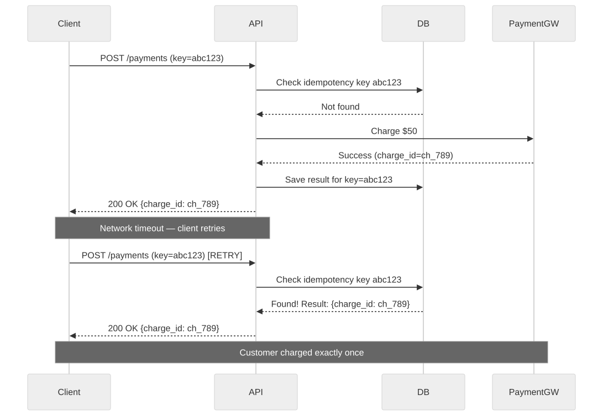
Trade-offs
| Benefit | Cost |
|---|---|
| Safe retries | Requires storage for idempotency keys |
| At-least-once delivery becomes safe | Key expiration policy must be designed |
| Crash recovery without side effects | Adds latency (key lookup on every request) |
Common Mistakes
- Using server-generated IDs as idempotency keys. The key must be generated by the caller, not the server.
- Forgetting to make the idempotency check and the operation atomic. A race condition between check and insert can allow duplicates.
- Not handling partial failures. If the payment succeeds but the idempotency key save fails, the retry will charge again.
Interview Insights
- Idempotency is expected in every payment, order, or message processing design. Always mention it proactively.
- Strong answer: "Every mutating API endpoint will accept an idempotency key. The server stores the key and result atomically, so retries return the same response without re-executing the operation."
3.4 Statelessness
Definition
A stateless service does not store client session state between requests. Every request contains all the information needed to process it. Server-side state (database records, cache entries) is externalized to shared stores.
Why It Matters in System Design
- Stateless services can be horizontally scaled by adding more instances behind a load balancer. Any instance can handle any request.
- Stateless services can be freely restarted, replaced, or autoscaled without worrying about losing in-memory state.
- Stateless design is a prerequisite for container orchestration (Kubernetes), serverless (Lambda), and blue-green deployments.
Externalizing State
| State Type | Stateful Approach | Stateless Approach |
|---|---|---|
| User session | In-memory on server | JWT token or Redis session store |
| Shopping cart | Server-side HashMap | Redis or DynamoDB with user_id key |
| File upload progress | Server memory | S3 multipart upload with client-tracked ETag |
| WebSocket connections | In-memory connection map | Connection registry in Redis |
| Rate limit counters | In-memory counter | Redis INCR with TTL |
Session Management Strategies
# Strategy 1: JWT (fully stateless — no server-side session storage)
# Pros: No session store needed, scales infinitely
# Cons: Cannot revoke individual tokens without a blocklist
import jwt
def create_token(user_id: int, roles: list[str]) -> str:
payload = {
"sub": user_id,
"roles": roles,
"exp": datetime.utcnow() + timedelta(hours=1),
"iat": datetime.utcnow(),
}
return jwt.encode(payload, SECRET_KEY, algorithm="HS256")
def authenticate(request):
token = request.headers.get("Authorization", "").replace("Bearer ", "")
payload = jwt.decode(token, SECRET_KEY, algorithms=["HS256"])
return payload["sub"], payload["roles"]
# Strategy 2: Token + Redis session (hybrid)
# Pros: Can revoke sessions, can store mutable session data
# Cons: Redis becomes a dependency
def create_session(user_id: int) -> str:
session_id = str(uuid.uuid4())
redis.setex(
f"session:{session_id}",
timedelta(hours=1),
json.dumps({"user_id": user_id, "created_at": time.time()})
)
return session_id
def authenticate(request):
session_id = request.cookies.get("session_id")
session_data = redis.get(f"session:{session_id}")
if not session_data:
raise AuthenticationError("Invalid session")
return json.loads(session_data)
Trade-offs
| Benefit | Cost |
|---|---|
| Horizontal scalability | External state store becomes a dependency |
| Simple deployment and restart | Network latency for every state access |
| Cloud-native compatibility | State store must be highly available |
Interview Insights
- When asked how to scale a service, the first answer is: "Make it stateless, externalize session state to Redis, and scale horizontally behind a load balancer."
- Follow up with: "The trade-off is that Redis becomes a critical dependency, so I would use Redis Cluster with replication for high availability."
3.5 Fault Isolation
Definition
Fault isolation ensures that a failure in one component does not cascade to bring down the entire system. The "blast radius" of any failure should be contained.
Why It Matters in System Design
- In distributed systems, failures are not exceptional — they are the norm. Networks partition, services crash, databases become unavailable.
- Without fault isolation, a slow database query in the recommendation service can exhaust the thread pool of the order service, causing checkout to fail.
- Fault isolation is the difference between "the recommendation widget is blank" and "the entire website is down."
Strategies for Fault Isolation
Bulkhead Pattern
Named after ship compartments that prevent flooding from sinking the entire vessel.
Circuit Breaker Pattern
import time
class CircuitBreaker:
"""Prevents cascading failures by short-circuiting calls
to a failing service."""
CLOSED = "closed" # Normal operation
OPEN = "open" # Failing — reject calls immediately
HALF_OPEN = "half_open" # Testing — allow one call through
def __init__(self, failure_threshold=5, recovery_timeout=30):
self.failure_threshold = failure_threshold
self.recovery_timeout = recovery_timeout
self.state = self.CLOSED
self.failure_count = 0
self.last_failure_time = None
def call(self, fn, *args, **kwargs):
if self.state == self.OPEN:
if time.time() - self.last_failure_time > self.recovery_timeout:
self.state = self.HALF_OPEN
else:
raise CircuitOpenError("Circuit is open — call rejected")
try:
result = fn(*args, **kwargs)
self._on_success()
return result
except Exception as e:
self._on_failure()
raise
def _on_success(self):
self.failure_count = 0
self.state = self.CLOSED
def _on_failure(self):
self.failure_count += 1
self.last_failure_time = time.time()
if self.failure_count >= self.failure_threshold:
self.state = self.OPEN
# Usage:
recommendation_breaker = CircuitBreaker(failure_threshold=5, recovery_timeout=30)
def get_recommendations(user_id):
try:
return recommendation_breaker.call(recommendation_service.get, user_id)
except CircuitOpenError:
return [] # Graceful degradation: show empty recommendations
Failure Domains
Cell-based architecture divides the system into independent cells, each serving a subset of users. A failure in Cell A affects only 25% of users, not all of them.
Blast Radius Containment
| Strategy | Blast Radius |
|---|---|
| Monolith | Everything |
| Microservices (shared DB) | All services using the shared DB |
| Microservices (DB per service) | Single service |
| Cell-based | Single cell (fraction of users) |
| Multi-region active-active | Single region |
Real-World Patterns
Timeout + Retry + Circuit Breaker + Fallback:
def get_product_details(product_id):
"""Layered fault isolation for product detail page."""
# Layer 1: Cache (fastest, most resilient)
cached = cache.get(f"product:{product_id}")
if cached:
return cached
# Layer 2: Primary service with circuit breaker
try:
result = product_breaker.call(
lambda: product_service.get(product_id, timeout=2.0)
)
cache.set(f"product:{product_id}", result, ttl=300)
return result
except (CircuitOpenError, TimeoutError):
pass
# Layer 3: Stale cache (better than nothing)
stale = cache.get_stale(f"product:{product_id}")
if stale:
return stale
# Layer 4: Static fallback
return ProductFallback(id=product_id, name="Product Unavailable")
Trade-offs
| Benefit | Cost |
|---|---|
| Failures are contained | More complex architecture |
| Graceful degradation | Requires defining fallback behavior for every dependency |
| Higher overall availability | Resource overhead (separate pools, redundant instances) |
Interview Insights
- Always mention fault isolation when designing systems with multiple dependencies: "The product detail page depends on the catalog, pricing, inventory, and review services. I would use circuit breakers on each dependency so that a review service outage does not prevent users from viewing products."
- The phrase "blast radius" signals senior thinking.
3.6 Backward Compatibility
Definition
A system maintains backward compatibility when newer versions continue to work correctly with clients, data, and protocols designed for older versions.
Why It Matters in System Design
- In distributed systems, you cannot deploy all services simultaneously. During a rolling deployment, old and new versions coexist. Without backward compatibility, the deployment itself causes failures.
- APIs have external consumers (mobile apps, partner integrations) that cannot be force-upgraded.
- Database schemas evolve over years. A migration that breaks existing queries causes downtime.
API Versioning Strategies
| Strategy | Pros | Cons |
|---|---|---|
URL path (/v1/, /v2/) |
Explicit, easy to route | URL pollution, hard to deprecate |
Header (Accept: vnd.api.v2) |
Clean URLs | Hidden versioning, harder to test |
Query parameter (?version=2) |
Easy to add | Easy to forget, caching issues |
| Content negotiation | Standards-based | Complex implementation |
Schema Evolution Rules
Safe (backward-compatible) changes: - Add a new optional field (with a default value) - Add a new endpoint - Add a new event type - Add a new enum value (if consumers handle unknown values)
Unsafe (breaking) changes: - Remove or rename a field - Change a field's type - Change the meaning of a field - Remove an endpoint - Change an endpoint's URL - Make an optional field required
Database Schema Evolution
-- SAFE: Add a new nullable column (no existing queries break)
ALTER TABLE users ADD COLUMN avatar_url TEXT;
-- SAFE: Add a new column with a default (existing inserts still work)
ALTER TABLE users ADD COLUMN is_premium BOOLEAN DEFAULT FALSE;
-- UNSAFE: Rename a column (all queries using old name break)
-- DON'T: ALTER TABLE users RENAME COLUMN name TO full_name;
-- SAFE migration pattern for column rename:
-- Step 1: Add new column
ALTER TABLE users ADD COLUMN full_name TEXT;
-- Step 2: Backfill data
UPDATE users SET full_name = name WHERE full_name IS NULL;
-- Step 3: Update application to write to BOTH columns
-- Step 4: Update application to read from new column
-- Step 5: (Much later) Drop old column after all consumers migrate
ALTER TABLE users DROP COLUMN name;
Protocol Buffers and Schema Evolution
Protocol Buffers (protobuf) have built-in backward compatibility rules:
// Version 1
message User {
int64 id = 1;
string name = 2;
string email = 3;
}
// Version 2 — backward compatible
message User {
int64 id = 1;
string name = 2;
string email = 3;
string avatar_url = 4; // NEW: old clients ignore unknown fields
repeated string roles = 5; // NEW: old clients ignore this too
// Field 6 was removed (reserved to prevent reuse)
reserved 6;
reserved "phone_number"; // Prevents accidental reuse of field name
}
Protobuf compatibility rules:
- Never change the field number of an existing field.
- Never reuse a field number (use reserved).
- New fields must be optional or have default values.
- Renaming fields is safe (protobuf uses numbers, not names, on the wire).
The Expand-Contract Pattern
For large-scale migrations, use the expand-contract (also called parallel change) pattern:
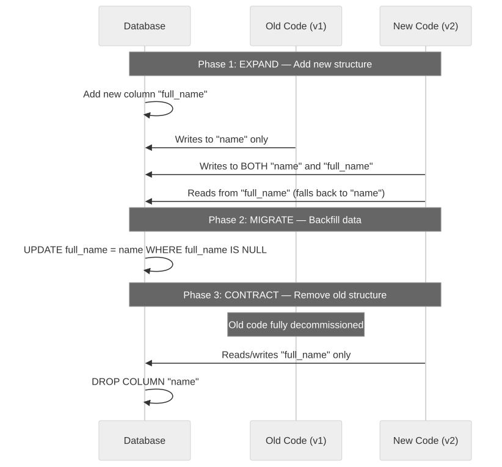
Trade-offs
| Benefit | Cost |
|---|---|
| Zero-downtime deployments | Slower schema evolution |
| External consumers not broken | Must maintain multiple versions |
| Safe rolling updates | Code complexity for dual-write periods |
Interview Insights
- When asked about API evolution, describe versioning strategy and backward compatibility rules.
- When designing database changes, always mention the expand-contract pattern for zero-downtime migrations.
3.7 Extensibility
Definition
Extensibility is the ability of a system to accommodate new functionality with minimal changes to existing code and infrastructure.
Why It Matters in System Design
- Business requirements change constantly. A system that is easy to extend delivers value faster.
- Extensibility reduces the cost of future features. In a well-designed system, adding a new payment method should take days, not months.
- Extensibility is the long-term payoff of applying OCP, DIP, and loose coupling.
Plugin Architectures
Extension Points
An extension point is a well-defined place in the system where new behavior can be plugged in without modifying the core.
# Extension point via registry pattern
class WebhookRegistry:
"""Core system provides the registry. Extensions register themselves."""
def __init__(self):
self._handlers: dict[str, list[callable]] = {}
def register(self, event_type: str, handler: callable):
self._handlers.setdefault(event_type, []).append(handler)
def emit(self, event_type: str, payload: dict):
for handler in self._handlers.get(event_type, []):
try:
handler(payload)
except Exception as e:
logger.error(f"Handler {handler.__name__} failed: {e}")
# Core system creates the registry
webhook_registry = WebhookRegistry()
# Extensions register themselves (no core code changes needed)
def on_order_created(payload):
slack.post(f"New order #{payload['order_id']}")
def on_order_created_analytics(payload):
analytics.track("order_created", payload)
webhook_registry.register("order.created", on_order_created)
webhook_registry.register("order.created", on_order_created_analytics)
# Core system emits events at extension points
class OrderService:
def create_order(self, data):
order = self._save_order(data)
webhook_registry.emit("order.created", {"order_id": order.id})
return order
Open-Closed in Practice: Middleware Stacks
# Extensible middleware pipeline — new middleware is added
# without modifying the pipeline runner
class MiddlewarePipeline:
def __init__(self):
self.middlewares = []
def use(self, middleware):
"""Add middleware to the pipeline."""
self.middlewares.append(middleware)
return self
def execute(self, request):
"""Execute the pipeline."""
handler = self._build_chain()
return handler(request)
def _build_chain(self):
def terminal(request):
return {"status": 404, "body": "Not Found"}
handler = terminal
for middleware in reversed(self.middlewares):
next_handler = handler
handler = lambda req, mw=middleware, nh=next_handler: mw(req, nh)
return handler
# Middlewares are independent, composable functions:
def auth_middleware(request, next_handler):
if not request.get("auth_token"):
return {"status": 401, "body": "Unauthorized"}
request["user"] = validate_token(request["auth_token"])
return next_handler(request)
def logging_middleware(request, next_handler):
start = time.time()
response = next_handler(request)
duration = time.time() - start
logger.info(f"{request['method']} {request['path']} -> {response['status']} ({duration:.3f}s)")
return response
def rate_limit_middleware(request, next_handler):
if rate_limiter.is_limited(request["client_ip"]):
return {"status": 429, "body": "Rate limited"}
return next_handler(request)
# Compose the pipeline:
pipeline = MiddlewarePipeline()
pipeline.use(logging_middleware)
pipeline.use(rate_limit_middleware)
pipeline.use(auth_middleware)
# Adding new middleware requires ZERO changes to existing code
Extensibility Anti-Patterns
| Anti-Pattern | Description | Fix |
|---|---|---|
| God class | One class that handles everything | Split along SRP boundaries |
| Hardcoded dependencies | if provider == "stripe" scattered everywhere |
Plugin interface + registry |
| Configuration sprawl | Hundreds of config flags controlling behavior | Feature modules instead of flags |
| Monolithic deployment | All features in one deployable unit | Modular monolith or microservices |
Trade-offs
| Benefit | Cost |
|---|---|
| Fast feature delivery | Upfront design investment |
| Third-party integrations | Plugin API must be well-designed |
| Reduced regression risk | Plugin isolation and security |
Interview Insights
- When asked "How would you add support for a new X?" the answer should involve extension points, not modification of existing code.
- Describe the registry pattern: "Payment methods are registered in a plugin registry. Adding Apple Pay means creating a new class that implements the PaymentHandler interface and registering it. No existing code changes."
3.8 Operations as Code and SRE Error Budgets
Definition
Operations as Code (also known as Infrastructure as Code, or IaC) treats infrastructure provisioning, configuration, and operational procedures as version-controlled, peer-reviewed, and tested code artifacts rather than manual runbook steps.
SRE Error Budgets formalize the balance between reliability and feature velocity: the error budget is 1 - SLO. If the SLO is 99.9%, the error budget is 0.1% of total time (approximately 8.7 hours per year). As long as the budget has headroom, teams ship features; when the budget is exhausted, teams focus on reliability.
Why It Matters in System Design
- IaC as a design principle: Manually provisioned infrastructure is a form of hidden coupling — the system's behavior depends on undocumented state. IaC makes infrastructure reproducible, auditable, and testable.
- Error budgets resolve the reliability-vs-velocity tension. Without an error budget, reliability and product teams are in perpetual conflict. The error budget provides a shared, data-driven decision framework.
- Toil elimination is the SRE principle that operational work which is manual, repetitive, automatable, and scales linearly with system growth should be systematically eliminated. Toil is the operational equivalent of technical debt.
Error Budget Decision Flow

Infrastructure as Code Principles
| Principle | Description | Example |
|---|---|---|
| Declarative over imperative | Describe the desired state, not the steps to get there | Terraform HCL, Kubernetes YAML |
| Idempotent applies | Running the same IaC twice produces the same result | terraform apply converges to desired state |
| Version-controlled | All infrastructure changes go through pull requests | GitOps workflow with ArgoCD |
| Tested | Infrastructure code has unit and integration tests | terratest, checkov for policy checks |
| Immutable infrastructure | Replace instances rather than patching in place | AMI baking, container image promotion |
Toil Elimination Criteria
Work qualifies as toil if it meets ALL of the following:
- Manual — a human performs the steps
- Repetitive — the same task recurs
- Automatable — a machine could do it
- Reactive — triggered by an event, not proactive
- No enduring value — does not permanently improve the system
- Scales linearly — effort grows with system size
Trade-offs
| Benefit | Cost |
|---|---|
| Reproducible environments | Learning curve for IaC tools |
| Auditable change history | Initial setup investment |
| Data-driven reliability decisions (error budgets) | Requires mature monitoring and SLI/SLO definition |
| Reduced toil frees engineering time | Automation itself requires maintenance |
Interview Insights
- When asked about deployment strategy, mention IaC: "All infrastructure is defined in Terraform and deployed via a GitOps pipeline — no manual changes."
- When discussing reliability targets, introduce error budgets: "We set a 99.95% SLO and use the error budget to decide when to ship features versus invest in reliability."
3.9 Security-by-Design and Zero Trust
Definition
Security-by-Design treats security as a foundational architectural principle, not a bolt-on phase. Zero Trust is the security model that assumes no implicit trust based on network location, identity, or previous authentication — every request must be verified.
Never trust, always verify.
Why It Matters in System Design
- Traditional perimeter-based security ("castle and moat") fails in cloud-native, microservice architectures where the network boundary is porous and services communicate across trust zones.
- Security breaches are among the most expensive system failures. Treating security as a first-class design principle prevents the most common classes of vulnerabilities at the architectural level.
- Shift-left security means integrating security practices early in the development lifecycle (design, code, CI) rather than only at deployment or in production.
Zero Trust Core Tenets
- Verify explicitly — Authenticate and authorize every request based on all available data (identity, device, location, behavior).
- Least-privilege access — Grant the minimum permissions needed, with just-in-time and just-enough access.
- Assume breach — Design systems to limit blast radius when (not if) a component is compromised.
Zero Trust Verification Flow
Defense in Depth Layers
| Layer | What It Protects | Examples |
|---|---|---|
| Network | Communication channels | mTLS between services, network policies, service mesh |
| Identity | Who is making the request | OAuth 2.0 / OIDC, short-lived tokens, workload identity |
| Application | Business logic | Input validation, parameterized queries, CSRF tokens |
| Data | Stored and in-transit data | Encryption at rest (AES-256), encryption in transit (TLS 1.3) |
| Monitoring | Detection and response | Audit logs, anomaly detection, SIEM, automated response |
Shift-Left Security Practices
| Practice | Phase | Tool Examples |
|---|---|---|
| Threat modeling | Design | STRIDE, PASTA, attack trees |
| Static analysis (SAST) | Code | Semgrep, CodeQL, SonarQube |
| Dependency scanning (SCA) | Build | Snyk, Dependabot, Trivy |
| Secret detection | Code / CI | git-secrets, truffleHog, detect-secrets |
| Policy-as-code | Deploy | OPA/Rego, Kyverno, Sentinel |
| Runtime protection (RASP) | Production | WAF, runtime anomaly detection |
Trade-offs
| Benefit | Cost |
|---|---|
| Reduced breach blast radius | Increased latency from per-request verification |
| Compliance with SOC2, HIPAA, PCI | More complex infrastructure (service mesh, PKI) |
| Defense against lateral movement | Developer experience friction (secret management, auth flows) |
| Early vulnerability detection (shift-left) | Tooling and training investment |
Interview Insights
- When designing any system with authentication, mention Zero Trust: "Service-to-service communication uses mTLS, and every request is authorized against an RBAC policy — no service trusts another implicitly."
- When asked about security, frame it as a layered principle: "I apply defense in depth — network isolation, identity verification, application-level validation, data encryption, and monitoring — so that no single layer's failure exposes the system."
Key Takeaway — Section 3: System-level principles — loose coupling, high cohesion, idempotency, statelessness, fault isolation, backward compatibility, extensibility, operations-as-code, SRE error budgets, and zero trust security — are the architectural equivalents of the code-level principles in Section 1. They govern how services communicate, fail, evolve, scale, and stay secure. In every system design interview, explicitly naming these principles when justifying decisions separates senior candidates from junior ones.
Architecture Decision Records (ADRs)
ADRs document the reasoning behind significant architectural decisions. They serve as organizational memory — when a new engineer asks "Why do we use event sourcing for orders?" the ADR provides the answer.
ADR Template
# ADR-001: Use Event-Driven Architecture for Post-Order Processing
## Status
Accepted
## Context
After an order is created, multiple downstream systems must react:
inventory, notifications, analytics, fraud review, and loyalty points.
The current synchronous approach creates tight coupling and makes the
checkout flow fragile — if the notification service is slow, checkout
is slow.
## Decision
We will adopt event-driven architecture for all post-order processing.
The order service will publish an OrderCreated event to a message broker
(Kafka). Downstream services will subscribe to relevant events and
process them asynchronously.
## Consequences
### Positive
- Checkout latency is decoupled from downstream processing.
- New consumers can be added without modifying the order service.
- Failed consumers can be retried independently.
### Negative
- Eventual consistency: downstream views may lag by seconds.
- Debugging distributed workflows is harder (need distributed tracing).
- Message ordering must be handled explicitly (partition by order_id).
### Risks
- Kafka becomes a single point of failure (mitigated by multi-broker cluster).
- Event schema evolution must be managed carefully.
## Alternatives Considered
1. **Synchronous HTTP calls:** Rejected due to coupling and cascading failure risk.
2. **Database triggers:** Rejected due to tight coupling to DB internals and poor testability.
3. **Outbox pattern with polling:** Considered as a complement — used for reliable event publishing.
When to Write an ADR
- Choosing a database technology
- Selecting a communication pattern (sync vs. async)
- Defining service boundaries
- Choosing an authentication mechanism
- Selecting a deployment strategy
- Any decision that would be expensive to reverse
Interview Angle
How to Use Principles in Interviews
Interviews test whether you can apply principles, not whether you can recite them. Here is how to weave principles into your design:
| Interview Moment | Principle to Apply | What to Say |
|---|---|---|
| Defining service boundaries | SRP + Bounded Contexts | "Each service owns a single domain — orders, payments, inventory — so they can evolve independently." |
| Handling payment methods | OCP + DIP | "I would define a PaymentHandler interface so adding new methods does not require modifying the checkout service." |
| Scaling the system | Statelessness | "All services are stateless with externalized session state, so I can horizontally scale by adding instances." |
| Handling retries | Idempotency | "Every mutating endpoint accepts an idempotency key to ensure retries are safe." |
| Dealing with service failures | Fault Isolation | "I would use circuit breakers on all inter-service calls and define graceful degradation for non-critical dependencies." |
| Evolving the API | Backward Compatibility | "I would use URL-based versioning and follow additive-only change rules." |
| Adding new features | Extensibility | "The notification system uses a plugin registry, so adding a new channel is a new class with zero changes to existing code." |
| Structuring code | SoC + Clean Code | "The controller handles HTTP, the service handles business logic, and the repository handles data access." |
Common Interview Anti-Patterns
| Anti-Pattern | What the Candidate Does | Better Approach |
|---|---|---|
| Technology-first | "I would use Kafka, Redis, Kubernetes..." | Start with requirements, then justify technology choices |
| Over-engineering | Designs for 10B users when the prompt says 1M | Design for stated requirements with a scaling path |
| Ignoring trade-offs | "This is the best approach" | "This approach has trade-off X; I chose it because..." |
| No principles | Makes design decisions without explaining why | Name the principle: "I chose this because of SRP..." |
| Buzzword salad | Drops terms without understanding | Explain what the term means and why it applies here |
Evolution Roadmap
How These Principles Scale With System Maturity
| Principle | Early Stage | Growth Stage | Mature Stage |
|---|---|---|---|
| KISS | Maximum priority | Still important | Complexity is justified |
| YAGNI | Strict | Selective future-proofing | Strategic investment in extensibility |
| SRP | Within monolith modules | Drives service extraction | Service boundary governance |
| DRY | Within single codebase | Shared libraries (cautiously) | Schema registries, contract-first |
| Statelessness | Nice to have | Required for horizontal scaling | Foundation of infrastructure |
| Idempotency | For payments only | For all mutations | For all events and messages |
| Fault isolation | Basic error handling | Circuit breakers | Cell-based architecture |
| Backward compatibility | Not needed (no users) | API versioning | Full schema evolution |
| Extensibility | Not needed | Internal plugin points | External developer ecosystem |
Practice Questions
Conceptual Questions
Q1. You are designing a notification service that currently supports email. The product team says "we might add SMS and push notifications someday, but not in the next 6 months." How do you balance OCP and YAGNI?
Expected answer: Apply YAGNI for now — implement email directly without a notification abstraction. However, structure the code so that extracting a NotificationChannel interface later is straightforward (clean separation between message construction and message delivery). When SMS is confirmed on the roadmap, apply OCP by introducing the interface.
Q2. A team has a "utils" package containing 50 helper functions used across 12 services. What principles does this violate, and how would you refactor it?
Expected answer: The utils package violates SRP (many unrelated responsibilities), ISP (services depend on functions they do not use), and has coincidental cohesion. Refactor by migrating each function to the domain-specific package where it belongs (tax calculation to the pricing module, email validation to the user module). Functions with no clear domain home (e.g., string formatting) can remain in a minimal shared library.
Q3. Explain how idempotency keys work and why the key must be generated by the client, not the server.
Expected answer: An idempotency key is a unique identifier attached to a mutating request. The server stores the key and the result. On retry, the server returns the stored result instead of re-executing. The key must be client-generated because the purpose is to deduplicate retries of the same logical operation. If the server generated the key, the client would not have it when retrying (since the first response was lost).
Q4. You have a service that stores user sessions in local memory. The ops team wants to autoscale it. What principle is violated, and how do you fix it?
Expected answer: The service violates statelessness. Fix: externalize session state to Redis (or another shared store) so that any instance can handle any request. This allows the load balancer to use round-robin instead of sticky sessions, and autoscaling can add or remove instances freely.
Q5. What is the difference between afferent coupling and efferent coupling? Which is more dangerous to change?
Expected answer: Afferent coupling (Ca) counts how many modules depend on this module. Efferent coupling (Ce) counts how many modules this module depends on. A module with high afferent coupling is more dangerous to change because changes ripple to all dependents. A module with high efferent coupling is fragile (breaks when any dependency changes) but changes to it do not affect others.
Design Questions
Q6. Design a payment processing system that supports multiple payment providers (Stripe, PayPal, Braintree) and can add new providers without modifying existing code.
Expected answer: Apply OCP and DIP. Define a PaymentProvider interface with methods like authorize(), capture(), and refund(). Each provider implements this interface. Use a registry or factory to resolve the correct provider at runtime. The checkout service depends only on the PaymentProvider abstraction. Adding a new provider means creating a new class and registering it.
Q7. Your e-commerce platform has a checkout service that calls the inventory, payment, and notification services synchronously. During a flash sale, the notification service becomes slow, causing checkout timeouts. How do you fix this using fault isolation principles?
Expected answer: Apply fault isolation at multiple levels: (1) Make notification calls asynchronous — publish an OrderCreated event and let the notification service consume it from a queue. Checkout should not wait for notifications. (2) Add circuit breakers on the remaining synchronous calls (inventory, payment). (3) Define timeouts: inventory check gets 500ms, payment authorization gets 5s. (4) Implement graceful degradation: if inventory check times out, use cached stock levels with a warning.
Q8. You need to rename a database column from name to full_name across 15 services that read from this table. Describe the migration strategy.
Expected answer: Use the expand-contract pattern: (1) Add the full_name column. (2) Update the write path to write to both name and full_name. (3) Backfill existing rows. (4) Update read paths to prefer full_name, falling back to name. (5) Once all 15 services have migrated, remove the write to name. (6) Finally, drop the name column. Each step is independently deployable and backward compatible.
Q9. A colleague argues that every class should have an interface "for testability." Using ISP and YAGNI, how would you respond?
Expected answer: Applying YAGNI, creating an interface for a class with only one implementation adds indirection without benefit. Applying ISP, an interface should exist only when there are multiple consumers with different needs. For testability, many languages support mocking concrete classes directly. Create interfaces when you actually need polymorphism (multiple implementations or seam for testing a critical boundary), not as a blanket rule.
Q10. How does the Law of Demeter apply to microservice API design?
Expected answer: LoD at the service level means a client should not need to call Service A to get data, then use that data to call Service B, then use that data to call Service C. Instead, provide a facade or gateway that aggregates the necessary data in a single call. This reduces the client's coupling to internal service topology and reduces the number of network round-trips.
Q11. Explain the relationship between SRP and microservice granularity. How do you decide whether to split a monolith module into a separate service?
Expected answer: SRP defines the conceptual boundary (single reason to change), but that is necessary, not sufficient, for a service split. Additional criteria: (1) Does the module need to scale independently? (2) Does it need a different technology stack? (3) Does it need a different deployment cadence? (4) Is the operational overhead of a separate service justified? A module can satisfy SRP within a monolith. Extract it into a service only when there is a concrete benefit beyond just responsibility separation.
Q12. You are building a REST API. A mobile client needs 3 fields from the user profile, but the API returns 50 fields. Which principles apply, and what is the solution?
Expected answer: ISP applies — the mobile client should not be forced to receive data it does not use. Solutions: (1) Field selection via query parameter: GET /users/123?fields=name,email,avatar. (2) Backend for Frontend (BFF): a mobile-specific API that returns only what the mobile client needs. (3) GraphQL: the client specifies exactly which fields it wants. Option 1 is simplest; Option 2 provides the most control.
Q13. What are the risks of applying DRY across microservice boundaries?
Expected answer: DRY across services means shared libraries. Risks: (1) Deployment coupling — updating the shared library requires redeploying all services that use it. (2) Version conflicts — different services may need different versions. (3) Lowest common denominator — the library must satisfy all consumers, potentially compromising any individual consumer's needs. Mitigation: keep shared libraries limited to truly cross-cutting concerns (logging, tracing, error formatting) and version them strictly. Business logic should not be shared.
Q14. Design an extensible event processing system where new event handlers can be added without modifying the core pipeline.
Expected answer: The core system defines an EventHandler interface with can_handle(event_type) and process(event) methods. Handlers register themselves with an EventRouter. When an event arrives, the router dispatches it to all registered handlers for that event type. New handlers are added by implementing the interface and registering — zero changes to the router or existing handlers. Include error isolation (one handler's failure should not prevent other handlers from executing) and dead-letter queues for failed events.
Q15. A system has 99.9% uptime but a single-point-of-failure database. The team wants to add a read replica. Which principles guide this decision, and what are the trade-offs?
Expected answer: Fault isolation (removing SPOF), statelessness (read replicas are interchangeable), and eventual consistency (replicas may lag). Trade-offs: (1) Read-after-write consistency — a user who just updated their profile may see stale data from a replica. Solution: route reads to the primary for N seconds after a write. (2) Operational complexity — monitoring replication lag, handling replica failures. (3) Cost — additional database instances. The decision is justified because the current SPOF means any database issue takes down the entire system.
Q16. Compare composition over inheritance at the code level and at the system level. Provide examples of each.
Expected answer: Code level: instead of a LoggingEmailSender extends EmailSender hierarchy, compose a LoggingDecorator with an EmailSender. System level: instead of building a monolithic service that inherits features by copying code from other services, compose independent services (order, payment, inventory) that communicate through APIs and events. The principle is the same: build complex behavior by combining simple, independent components rather than building deep hierarchies.
Principles for Architects — Executive Checklist
Use this one-page checklist as a quick reference to evaluate whether your architecture respects the key principles covered in this chapter.
| Principle | One-Line Definition | When to Apply | Common Violation Signal |
|---|---|---|---|
| SRP | One module, one reason to change | Service boundary decisions, class design | A change to billing logic forces redeploying the auth service |
| OCP | Open for extension, closed for modification | Adding new variants (payment methods, channels) | Every new feature requires modifying a central if/else block |
| LSP | Subtypes must honor base type contracts | API versioning, interface hierarchies | A v2 endpoint breaks v1 consumers |
| ISP | No client should depend on methods it does not use | API surface design, SDK design | Mobile clients download 50 fields when they need 3 |
| DIP | Depend on abstractions, not implementations | Service wiring, testability | Unit tests require a live database connection |
| DRY | Single source of truth for every piece of knowledge | Shared business logic, schema definitions | Tax calculation logic copy-pasted across three services |
| KISS | Prefer the simplest solution that works | Technology selection, architecture decisions | A two-person team running Kubernetes with a service mesh |
| YAGNI | Do not build for hypothetical requirements | Feature scoping, capacity design | Designing for 10 billion users when the prompt says 1 million |
| SoC | Separate independent concerns into distinct layers | Layered architecture, frontend/backend split | HTTP parsing and SQL queries in the same function |
| Composition over Inheritance | Build behavior by assembling parts, not deep hierarchies | Middleware, notification pipelines | A 5-level class hierarchy where changing the base class breaks everything |
| Law of Demeter | Only talk to immediate collaborators | API gateway design, service interaction | Service A calls B, which calls C, which calls D in a synchronous chain |
| Loose Coupling | Minimize inter-module knowledge | Event-driven design, API contracts | Renaming a field in Service A breaks Services B, C, and D |
| High Cohesion | Group related elements together | Module and package design | A utils package with 50 unrelated functions |
| Idempotency | Same request, same result, no side effects on retry | Payment processing, message handling | Duplicate charges after a network retry |
| Statelessness | No server-side session state per request | Horizontal scaling, autoscaling | Sticky sessions required because state is stored in local memory |
| Fault Isolation | One failure should not cascade | Circuit breakers, bulkhead patterns | A slow review service causes checkout timeouts |
| Backward Compatibility | New versions must not break old clients | API evolution, schema migration | A column rename causes downtime across 15 services |
| Extensibility | New features via extension, not modification | Plugin systems, middleware pipelines | Adding a new payment method requires changes in 12 files |
| IaC / Operations as Code | Treat infrastructure as version-controlled code | Cloud provisioning, deployment automation | Snowflake servers that cannot be reproduced |
| SRE Error Budgets | Balance reliability with feature velocity | Release cadence decisions, reliability investments | Perpetual conflict between product and reliability teams |
| Zero Trust / Security-by-Design | Never trust, always verify | Service-to-service auth, data access | Services trust each other because they share a VPC |
Well-Architected Framework Mapping
The principles covered in this chapter map directly to the pillars defined by the major cloud providers' Well-Architected Frameworks (AWS, GCP, Azure). Use this table to connect chapter concepts to framework language when working with cloud-native architectures or preparing for cloud certification exams.
| Well-Architected Pillar | Chapter Principles That Apply | Key Relationship |
|---|---|---|
| Operational Excellence | IaC (3.8), Toil Elimination (3.8), SRE Error Budgets (3.8), ADRs | Treat operations as code; use error budgets for data-driven decisions; document decisions in ADRs |
| Security | Zero Trust (3.9), Defense in Depth (3.9), Shift-Left Security (3.9), Least Privilege | Never trust, always verify; layer defenses; integrate security early in the lifecycle |
| Reliability | Fault Isolation (3.5), Idempotency (3.3), Statelessness (3.4), Error Budgets (3.8) | Isolate failures with circuit breakers; make retries safe with idempotency; scale with statelessness |
| Performance Efficiency | KISS (1.3), Statelessness (3.4), Loose Coupling (3.1), SoC (1.5) | Simplicity enables optimization; stateless services scale horizontally; loose coupling allows independent tuning |
| Cost Optimization | YAGNI (1.4), KISS (1.3), Toil Elimination (3.8) | Build only what is needed; simplicity reduces operational cost; automate toil to free engineering time |
| Sustainability | DRY (1.2), Modularity (2.5), Extensibility (3.7) | Eliminate waste; reuse components; extend rather than rebuild |
Note: AWS, GCP, and Azure each define these pillars with slightly different emphasis, but the underlying principles are universal. The mapping above uses the common denominator across all three frameworks.
Summary
Design principles are not rules to be followed blindly — they are forces that pull in different directions. The art of system design is understanding which principles apply in a given context and how to resolve the tensions between them.
Key tensions to navigate: - YAGNI vs. Extensibility: Build only what is needed now, but make it easy to add what will be needed later. - DRY vs. Coupling: Eliminate duplication, but not at the cost of creating tight coupling between unrelated modules. - KISS vs. Fault tolerance: Keep it simple, but real systems need circuit breakers, retries, and fallbacks. - SRP vs. Performance: Clean separation creates more network calls in distributed systems. Sometimes denormalization and co-location are necessary. - Loose coupling vs. Consistency: Event-driven systems are loosely coupled but eventually consistent. Synchronous calls are tightly coupled but strongly consistent.
The engineer who can name these tensions, explain the trade-offs, and make a justified decision is the engineer who passes senior-level system design interviews.
Cross-References
- Chapter F02: Design Patterns — concrete implementations of these principles
- Chapter F03: Architectural Styles — how principles shape system topology
- Chapter F04: Non-Functional Requirements — the constraints that determine which principles to prioritize
- Chapter F05: Trade-off Analysis — frameworks for resolving principle tensions
- Chapter F06: Estimation & Capacity Planning — quantifying the impact of design decisions